Format
subfield
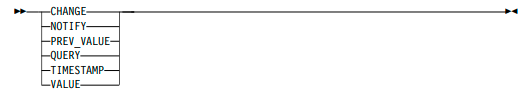
Usage Notes
The subfield name definitions are:
CHANGE
The method specification of the change method
NOTIFY
A subscription specification list representing notification subscriptions
PREV_VALUE
The previous value of the field
QUERY
The method specification of the query method
TIMESTAMP
The time stamp of the last change to the field
VALUE
The value of the field
subs_spec:
Purpose
A subs_spec is a notification subscription specification which consists of a method
specification followed by a recipient specification, separated by a comma.
Format
subs_spe
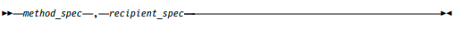
subs_spec_list:
Purpose
A subs_spec_list is a list of subscript specifications.
Format
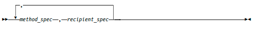
type:
Purpose
A predefined data type keyword.
Format
type
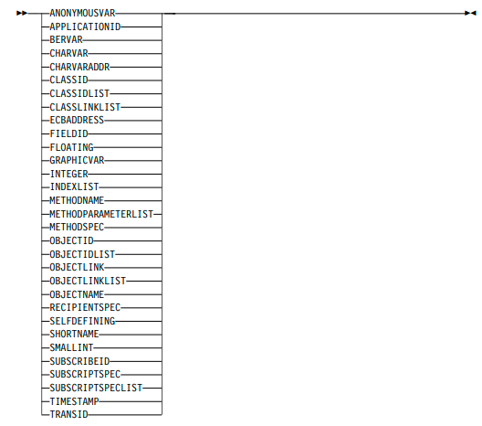
Notes:
1. These data types are valid only within SELFDEFINING data:
APPLICATIONID
CHARVARADDR
CLASSIDLIST
CLASSLINKLIST
ECBADDRESS
METHODNAME
METHODPARAMETERLIST
OBJECTIDLIST
OBJECTNAME
RECIPIENTSPEC
SHORTNAME
SUBSCRIBEID
SUBSCRIPTSPEC
SUBSCRIPTSPECLIST
TRANSID
2. For limitations in CLASSID and OBJECTID, see “Using CLASSID and
OBJECTID Data Types” on page 259.
typed_value:
Purpose
A typed_value is a concatenation of a left parenthesis, a type keyword, a right
parenthesis, and a value to match the data type of the type keyword.
Format
typed_value
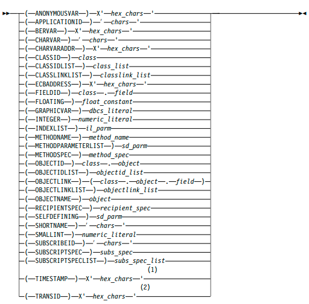
Notes:
1 TIMESTAMP must be exactly 8 bytes.
2 TRANSID must be exactly 8 bytes.
Usage Notes
You can specify null values for some of the data types. See “Null Values for
RODM Load Function Data Types” on page 259.
Chapter 11. Writing Applications that Use RODM
RODM provides a user application programming interface (user API). This user API
allows a properly authorized address space to access the data contained in the
RODM address space and data spaces. Through this user API, objects can be
created, organized into hierarchies, or deleted. The user API can also be used to
query the value of a field associated with an object or to alter the value in that
field. The user API can be called from NetView command processors and from
applications written in any programming language that meets the parameter
passing conventions of RODM. While RODM provides control block mappings in
PL/I and C, you can write applications in any programming language that uses
the interface described in “Register Conventions” on page 306.
RODM also provides a method API, which shares many functions with the user
API. The method API is described in Chapter 13, “Writing RODM Methods,” on
page 343.
The NetView program supplies a set of general-purpose methods. For a description
of these methods, see “Supplied Methods” on page 488.
Tasks Best Performed with User Applications
This section describes which tasks are best performed with user applications.
Use an application program to do the following:
Supply status changes of resources to the RODM data cache.
The RODM data cache is viewed as a model of real-world resources; therefore,
ensure that resource objects in the data cache are updated as actual resources
change status. v Subscribe for notification of data changes.
Before a user application program can receive notification of RODM data cache
changes, a notification subscription to the necessary fields in the relevant objects
or classes is required. v Wait for and process data change notifications.
The user application is responsible for waiting for and processing the
notifications from the objects or classes to which it is subscribed.
Query data for operator view, displays, and queries.
Application programs that communicate with users through a user interface and
require access to data in the RODM data cache and must query that data
through RODM.
Add or delete resources.
Application programs requiring data cache hierarchy modification can do so by
calling RODM to manipulate objects and classes.
Communicate with NetView applications.
NetView applications can query and change RODM data through the user API.
You can use either RODMView or the MultiSystem Manager Access facility to
query and change RODM data.
Using the User Application Program Interface
User API calls to RODM must pass the following four parameters to module
EKGUAPI:
Access block
Transaction information block
Function block
Response block
The function block can point to additional parameters, such as entity access
information blocks and field access information blocks, which identify the target of
the function.
Figure 68 shows typical user API invocations, first in C and then in PL/I.
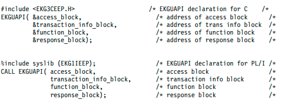
Figure 68. Typical User API Invocation in C and PL/I
The call statement transfers control to the code segment identified as EKGUAPI.
The user can include EKGUAPI module during the link-edit of the application.
Register Conventions
The generated code must follow these conventions.
Register 1
Points to a four-entry parameter list that contains the addresses of the
access_block, transaction_info_block, function_block, and response_block,
respectively. These control blocks are shown in Figure 69 on page 309.
Register 13
Contains the address for the calling program's 72-byte save area.
Register 14
Contains the return address for the calling program.
Register 15
Contains the entry address for the EKGUAPI module.
Usage Notes®
Within this programming guide the term null pointer is used. The value of a null
pointer is defined as X'00000000'. Using PL/I, this value is provided by the built-in
SYSNULL function. Do not use the built-in NULL function; it generates the value
X'FF000000'.
If the call is made from a high-level language where the parameter list is built by
the compiler and a null response_block value cannot be passed, a pointer to a
dummy response_block must be specified. The dummy response_block must be in
the correct format and specify a length of at least 8. See “Response Block” on page
319 for additional information about response blocks.
User API calls are synchronous. The EKG_ExecuteFunctionList function can specify
a list of other functions that are to be run. If the list of functions contains two
adjacent functions that affect the same object, the lock on that object is not released
during the time interval between the processing of the two functions.
RODM applications must be running in key 8 at the time EKGUAPI is called. All
parameter lists, control blocks, and other data areas that are passed to RODM must
reside in storage that is accessible in key 8.
Compiling and Link-Editing
The application can link-edit the EKGUAPI module during the link-edit step or
dynamically load the module during execution.
Compiling C Modules that Call EKGUAPI
If any RODM control blocks are referenced in the modules, include the
EKG3CINC.H file in your source file. This file includes all of the RODM function
and response blocks, and the function prototype statements for the RODM entry
points EKGUAPI, EKGMAPI, and EKGWAIT.
If no RODM control blocks are referenced in the modules, but the modules call
EKGUAPI or EKGWAIT, include the EKG3CEEP.H file in your source file.
Example:
#include "EKG3CINC.H"
/* or */
#include "EKG3CEEP.H"
void thisproc (void arg)
{
/* code */
}
Compiling PL/I Modules that Call EKGUAPI
If any RODM control blocks are referenced in the modules, include the EKG1IINC
file in your source file. This file includes all of the RODM function and response
blocks, and the function prototype statements for the RODM entry points
EKGUAPI, EKGMAPI, and EKGWAIT.
If no RODM control blocks are referenced in the modules but the modules call
EKGUAPI or EKGWAIT, include the EKG1IEEP file in your source file.
Specify the MACRO preprocessor compiler option if you include RODM macros in
your user application, for example, as follows:
*PROCESS MACRO;
thisproc: proc;
%include ekglib(EKG1IINC);
or
%include ekglib(EKG1IEEP);
/* code */
end thisproc;
Linking Modules that Call EKGUAPI Directly
The INCLUDE SYSLIB(EKGUAPI) link-edit control statement must be specified
before the ENTRY statement in your source file.
The AMODE=31 link-edit option must be specified.
The RMODE=ANY or RMODE=24 link-edit option must be specified.
The following ENTRY CEESTART statement must be specified:
INCLUDE SYSLIB(EKGUAPI)
ENTRY CEESTART
NAME module_name(R)
Linking Modules that Load and then Call EKGUAPI
Because EKGUAPI is a load module, modules that first load and then call
EKGUAPI do not need special link-edit control statements. However, the
EKGUAPI load module must be accessible to the module that loads it (through
STEPLIB, JOBLIB, or z/OS linklist).
Using Control Blocks
All user API calls to RODM pass four parameters as shown in Figure 69 on page
309. The figure is an example of the relationships between the user API call and
the control blocks for a RODM query function request. The control block
relationships are similar for other RODM function requests from the user
application.
The parameters passed are pointers to the following control blocks:
Access Block
Contains the user information needed to process the user API request.
Transaction Information Block
Contains transaction information and status about the API request.
Function Block
Contains the details of the requested transaction against RODM data. The
content of this control block varies depending on the transaction requested.
For some requested transactions it includes pointers to two information
blocks:
Entity Access Information Block
Field Access Information Block
Response Block
Contains the output data from the transaction requested. The format and
specific content of the response block depends on the type of transaction
requested.
In Figure 69 on page 309, the PL/I-like syntax describes the four passed control
blocks and the two associated access information blocks. Equivalently organized
blocks can be represented in C. The actual order and offset position within the
control blocks are specified in the tables referenced within each of the following
control block descriptions.
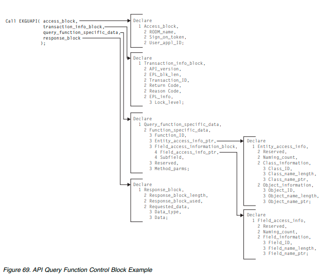
Access Block
Description
The access block contains user information that RODM needs to process user API
requests.
Function Block Format
Table 25 on page 310 describes the format of the access block. The table headings
have the following meanings:
Offset Specifies the offset to the beginning of the parameter in decimal bytes.
Length
Specifies the length of the parameter in decimal bytes.
Type Specifies the RODM data type of the parameter. See “Abstract Data Type
Reference” on page 219 for more information.
Use Specifies whether the parameter is used for data input to a function or for
data output by a function.
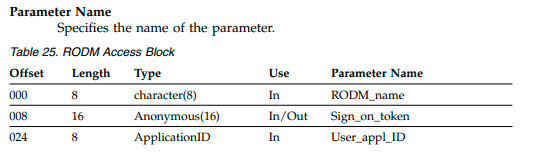
Function Block Field Descriptions
RODM_name
The name of the RODM that is to receive this request to connect must be
placed by the caller in the RODM_name field. Because the access block is
usually reused on successive calls, the RODM_name field is set only once by a
user, just before the connection request is issued. This is the name that you
specify when you start RODM. To determine the RODM name, refer to
NetView online help.
Sign_on_token
The token that RODM uses to uniquely identify the user. The data structure
that RODM sets at completion of the connection is returned in the
sign_on_token parameter.
The sign_on_token is set by RODM each time a user connects to RODM.
User_appl_ID
The identifier that the user application program specifies to identify itself. For
an APF (authorized program facility) authorized program, the User_appl_ID
alone identifies the user to RODM and determines the user's capabilities. For
application programs that are not APF authorized, the User_appl_ID is
combined with the password or password phrase from the connect function
block to identify the user to RODM and determine the user's capabilities. This
field is a maximum of 8 bytes with shorter values left-justified in the field and
padded on the right with blanks. Valid characters for this string are the same
as for object names.
Examples
Sample control blocks for PL/I and C are supplied with RODM. Include these
control blocks in your programs.
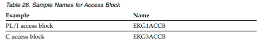
Usage
RODM needs a fully initialized access block to successfully complete user API calls
that are issued after the Connect request. You must reference or define an access
control block with every call to the RODM User Interface (EKGUAPI).
Several applications can access the RODM data cache at the same time and trigger
methods appropriate to each application's function. The sign_on_token field of the
access block is used to identify the user for each transaction.
RODM verifies the authorization level of the user application. Each RODM
function requires a particular authorization level.
The fields in the access block set by the caller are the RODM_name and
User_appl_ID fields. These fields are set once, by the application, just before the
user API is called. The EKG_Connect or EKG_ConnectLong user API fills in a
value for the sign_on_token field. After the access block is established by a connect
request, the application does not modify the information in that block.
More details about connection to RODM are provided in “Connecting to RODM”
on page 331.
Transaction Information Block
Description
The transaction information block contains transaction-status information about
each API request. The transaction information block is required for every RODM
function request.
Function Block Format
Table 27 describes the format of the transaction information block. The table
headings have the following meanings:
Offset Specifies the offset to the beginning of the parameter, in decimal bytes.
Length
Specifies the length of the parameter, in decimal bytes.
Type Specifies the RODM data type of the parameter.
Use Specifies whether the parameter is used for data input to a function or for
data output by a function. A dash (—) indicates that the parameter is not
used by functions or is reserved.
Parameter Name
Specifies the name of the parameter.
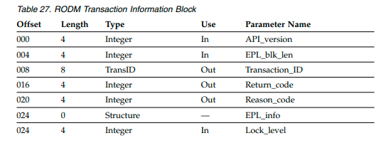
Function Block Field Descriptions
API_version
The API_version field specifies the version of the API that RODM is to use for
the API request. The valid values for this field are:
0 RODM is to use the most recent API version
1 RODM is to use version 1 API
EPL_blk_len
Not used, but retained for compatibility.
Transaction_ID
Every RODM transaction initiated by a user application is assigned a unique
transaction ID by RODM. Synchronous method transactions that are triggered
by a user application transaction have the same transaction ID as the user
application. The transaction_ID field controls the order of this transaction
relative to all other transactions. The transaction ID is also used in journaling
all transactions against RODM between checkpoints. These are described in
detail in the section of this document on Registering for Checkpoint
Notification. See “Coding Checkpoint Control” on page 386.
Return_code
Return code from RODM. See “RODM Return and Reason Codes” on page 459
for a list of return codes.
Reason_code
Reason code from RODM. See “RODM Return and Reason Codes” on page 459
for a list of reason codes.
EPL_info
Not used, but retained for compatibility.
Lock_level
Not used, but retained for compatibility.
Examples
Sample control blocks for PL/I and C are supplied with RODM. Include these
control blocks in your programs.
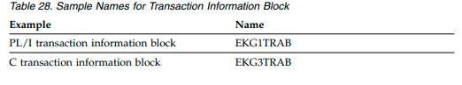
Usage
The return code and reason code fields are used for RODM to communicate with
the user application about the status of the requested function.
Function Block
Description
The details of all transactions against RODM data are specified in function blocks.
A user builds a function block and passes it to RODM to request a desired
transaction.
Function Block Format
The format of each function block is listed in “Function Reference” on page 375.
Function Block Field Descriptions
A description of each parameter used in the function blocks is listed in “Functionm
Parameter Descriptions” on page 452.
Usage
The first field in every function block contains a 4-byte integer that specifies which
function is being requested. The format of the remainder of the function block is
dependent upon the four-byte function ID.
One common format for a function block includes the specification of a class, an
object, and a field. Sometimes there are also fields in the function block used to
specify a subfield in RODM. Sometimes only a class and an object can be specified
in a function block. Sometimes, only a class can be specified.
Entity Access Information Block
Description
The entity access information block (EAIB) contains information used by the API to
access a class or object. The EAIB is separate from the function block so that it can
be reused on subsequent API calls. A pointer to the EAIB is stored in the function
block.
The access information is available in two different forms:
Symbolic names provided by the application.
IDs generated by RODM when symbolic names are used to create a class or
object. This form provides the fastest access to the information.
Function Block Format
Table 29 describes the format of the entity access information block. The table
headings have the following meanings:
Offset Specifies the offset to the beginning of the parameter, in decimal bytes.
Length
Specifies the length of the parameter, in decimal bytes.
Type Specifies the RODM data type of the parameter.
Use Specifies whether the parameter is used for data input to a function or for
data output by a function. A dash (—) indicates that the parameter is not
used by functions or is reserved.
Parameter Name
Specifies the name of the parameter.
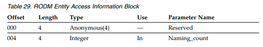
Function Block Field Descriptions
Naming_count
The Naming_count field in the entity access information block specifies which
data in the block is valid. Valid values are:
Value Meaning
0,2 Specifies that the target of the function is either a class or an object and
that both the object access information and the class access information
are valid.
1 Specifies that the target of the function is a class and that only the class
access information is valid.
Interpretation of all this information is subject to the rules in “Usage” on page
315.
Class_ID
Class identifier.
Class_name_length
Class name length.
Class_name_ptr
This is the pointer to the class name. With a variable declared in PL/I as a
varying length string, for example, CLASS1 CHAR(64) VARYING, the class
name pointer is specified using the PL/I Pointeradd built-in function. To point
directly at the character data rather than at the PL/I 2-byte length prefix, code
class_name_ptr = POINTERADD(ADDR(CLASS1) ,2 )
Object_ID
Object identifier.
Object_name_length
Object name length.
Object_name_ptr
This is the pointer to the object name. With a variable declared in PL/I as a
varying length string, for example, OBJECT1 CHAR(255) VARYING, the object
name pointer is specified using the PL/I Pointeradd built-in function. To point
directly at the character data rather than at the PL/I 2-byte length prefix, code
object_name_ptr = POINTERADD(ADDR(OBJECT1) ,2 )
Examples
Sample control blocks for PL/I and C are supplied with RODM. Include these
control blocks in your programs.
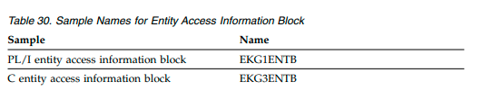
Usage
The function_ID in the function block specifies the function block used. The
function block specifies whether or not the entity access information block is used
for that function.
A null length value for a corresponding pointer indicates a null string, regardless
of the value of the pointer. Similarly, a null pointer value also indicates a null
string, regardless of the value of the corresponding length. A null string is
indicated by either a null length or a null pointer.
Pointers to names, if used, point to variable-length character strings. The length of
the character string is specified as a parameter in the entity access information
block, and the pointer in the entity access information block directly points to the
first byte of the character data.
Identifiers (RODM-generated internal IDs) exist in RODM because they are faster
to process than are character string names. Identifiers are always given preference
over character string names in resolving which class or object is to be addressed.
The following apply:
If both the Class_ID and the Class_name_length are not null values in an entity
access information block, the Class_ID is used, and the Class_Name_Ptr is
ignored. RODM does not check to determine if a Class_ID is consistent with a
class name where both are supplied by the caller.
If both the Object_ID and the Object_name_length are not null and the
Naming_count is not 1, the Object_ID is used, and the Object_Name_Ptr is
ignored. RODM does not check to determine if a supplied Object_ID is
consistent with a supplied object name.
If the Naming_count is 1, only class information is used by RODM.
An object identifier is sufficient to locate an object; it includes the identification of
the class that contains the object. When an object identifier is given, RODM ignores
all other object and class information.
If no Object_ID is provided and an object is required in the specification of the
target of the intended transaction, an Object_Name must be provided. In that case,
either the Class_ID must specify the class of the object, or the Class_Name_Ptr
must point to the name of the class. An error results if the specified class has no
object with that name.
For transactions that address a field of a class, no object is involved. The same
format is used for object and class access information blocks. Set the Object_ID and
the Object_name_length fields to null values to alert RODM that the target of the
transaction is on a class instead of on an object. The target class is the one specified
with either a Class_ID or by the Class_Name_Ptr. Alternatively, the user can set the
Naming_count field to a value of 1 and limit the scope of information analyzed by
RODM.
Control blocks are designed to be used repeatedly. For improved performance,
reuse control blocks. During the execution of an application that uses RODM,
similar transactions might be repeatedly requested with changes in the targets of
those transactions. The following actions are taken by RODM to simplify repeated
use of an entity access information block.
If the Class_ID field is null when RODM is called, and the Class_Name_Ptr field
is not null, and the requested transaction completes successfully (a return code
less than or equal to 4), RODM fills in the Class_ID field with the class-identifier
of the target class. RODM also fills in the Class_ID when an error prevents the
successful completion of the transaction if the target is accessed before the error
is detected.
If the Object_ID field is null when RODM is called, and the Object_Name_Ptr is
not null, and the naming count is not equal to 1 (which specifies that only class
information is used), and the requested transaction completes successfully (a
return code less than or equal to 4), RODM fills in the Object_ID field with the
Object-identifier of the target Object. RODM also fills in the Object_ID when an
error prevents the successful completion of the transaction if the target is
accessed before the error is detected.
If names are used to specify the targets in a transaction request and the request is
then repeated, reusing the same entity access information block, the identifier fields
are already filled in from the first transaction. The second transaction, therefore,
runs more quickly.
This increase in performance of a second transaction occurs to a lesser degree in
each of several circumstances where the second transaction is similar to but not the
same as the first transaction. For example, a performance increase of a lesser
degree on a second transaction is obtained when:
The second transaction specifies the same field as the first transaction, regardless
of the class and object fields.
The first and second transactions have the same object as a target, but the first
transaction uses a character string name to specify the object.
The second transaction specifies the same class as the first transaction (in the
class fields), but each transaction specifies a different object using a character
string name. When entity access information blocks are repeatedly used in this
way, the ObjectID must be set to null after each use of that block. Otherwise, on
reuse, the rule that identifiers are given preference over character string names
applies, and the second transaction is routed to the same target object, as that of
the first transaction.
When a function block is reused and the Class_name or Object_name field (or
pointer) is updated, the corresponding identifier fields (Class_ID, Object_ID) must
be reset to null. This is necessary because the character string name has
significance only if the identifier field is set to 0.
Field Access Information Block
Description
The field access information block (FAIB) contains information used by the API to
access a field. The FAIB is separate from the function block so that it can be reused
on subsequent API calls. A pointer to the FAIB is stored in the function block.
The access information is available in two different forms:
Symbolic names provided by the application.
IDs generated by RODM when symbolic names are used to create a field. This
form provides the fastest access to the information.
Function Block Format
Table 31 describes the format of the field access information block. The table
headings have the following meanings:
Offset Specifies the offset to the beginning of the parameter, in decimal bytes.
Length
Specifies the length of the parameter, in decimal bytes.
Type Specifies the RODM data type of the parameter.
Use Specifies whether the parameter is used for data input to a function or for
data output by a function. A dash (—) indicates that the parameter is not
used by functions or is reserved.
Parameter Name
Specifies the name of the parameter.
Table 31. RODM Field Access Information Block
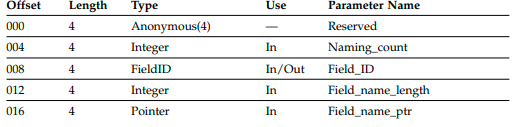
Function Block Field Descriptions
Naming_count
The naming_count field in the field_access_info block specifies if the field
access information is valid. The valid values are:
Value Meaning
0 The information is valid
1 Reserved
Always set Naming_count to 0 (zero).
Field_ID
Field identifier. Field_name_length
Field name length.
Field_name_ptr
This is the pointer to the field name.
Examples
Sample control blocks for PL/I and C are supplied with RODM. Include these
control blocks in your programs.
Table 32. Sample Names for Field Access Information Block
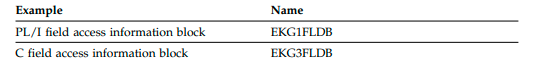
Usage
The function_ID in the function block specifies the function block used. The
function block specifies whether the field access information block is used for that
function.
A null length value for a corresponding pointer indicates a null string, regardless
of the value of the pointer. Similarly, a null pointer value also indicates a null
string, regardless of the value of the corresponding length. A null string is
indicated by either a null length or a null pointer.
Pointers to names, if used,point to variable-length character strings. The length of
the character string is specified as a parameter in the field access information block
along with the pointer that points directly to the first byte of the character data.
Identifiers (RODM-generated internal IDs) exist in RODM because they are faster
to process than are character string names. Identifiers are always given preference
over character string names in resolving which field is to be addressed. If both the
Field_ID and the Field_name_length are not null in a field access information
block, the Field_ID is used, and the Field_Name_Ptr is ignored. RODM does not
check that a supplied Field_ID is consistent with a supplied field name.
If a field is the target of the desired transaction, the specification of a field must be
provided by a Field_ID or Field field that is not null. The specified field is
associated with the entity (object or class) specified in the corresponding entity
access information block.
If names are used to specify the targets in a transaction request and the request is
then repeated, reusing the same entity access information block, the identifier fields
are already filled in from the first transaction. The second transaction, therefore,
runs more quickly.
Control blocks are designed to be used repeatedly. For improved performance,
reuse control blocks. During the execution of an application that uses RODM,
similar transactions might be repeatedly requested with changes in the targets of
those transactions. RODM takes the following action to simplify repeated use of a
field access information block:
If the Field_ID field is null when RODM is called, and the Field_name_Ptr is not
null, and the target of the transaction requires a field, and the requested
transaction completes successfully, RODM fills in the Field_ID field with the
Field-identifier of the target field.
RODM also fills in the Field_ID when an error prevents the successful
completion of the transaction if the target is accessed before the error is detected.
When a function block is reused and the Class_name or Object_name field (or
pointer) is updated, the corresponding identifier fields (Class_ID, Object_ID) must
be reset to null. This is necessary because the character string name has
significance only if the identifier field is set to 0.
Response Block
Description
The output from RODM query requests, query methods, named methods, and
object-independent methods is returned in response blocks. The format of the
response block and the data that the response block contains are dependent on the
kind of transaction that generated the response.
Function Block Format
The format of each response block is listed with its associated function. Table 33
contains a page reference to each response block format by function.
Table 33. Functions with Response Blocks
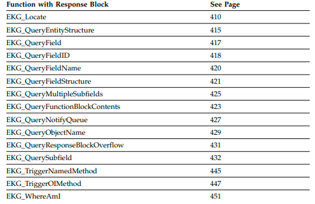
Function Block Field Descriptions
A description of each parameter used in the response blocks is listed in “Function
Parameter Descriptions” on page 452.
Usage
All response blocks have the same basic format:
A Response_block_length field set by the method or application indicates the
length in bytes of the response block that is supplied.
A Response_block_used field set by RODM indicates the amount of storage used
in the response block or the amount needed if the block is too small.
A block of storage whose format and contents depend on the transaction type
but that typically contains:
– A Data_type field providing the data type ID of the returned data
– The data returned by the function or by a method triggered by the function
If the response block provided by the caller is too small to hold a complete
response, one of the following happens:
If the supplied response block has fewer than 8 bytes, the transaction is
immediately ended with an error return code.
If the supplied response block has 8 or more bytes, the transaction is run by
RODM.
The data type and lengths of the returned values and the volume of the output
that is generated determine the total number of bytes needed in a response
block.
If there is insufficient room in the response block for the normal return of
information after RODM has completed the transaction, RODM sets the
Response_Block_Used field of the response block to show the total size of the
generated response. RODM stores that portion of the data in the response block
equal to the number of bytes specified in the Response_Block_Length field.
RODM can take one of two actions depending on the setting of the
EKG_RBOverflowAction field in the user object:
– If that field specifies discard, any overflow data is lost.
– If that field specifies to save overflow information, RODM saves the response
block overflow data for the user to retrieve on a later call.
See “EKG_QueryResponseBlockOverflow - Query for Response Block Overflow”
on page 430.
The overflow data is identified by the Transaction ID in the transaction
information block of the transaction that caused the overflow. The Transaction
ID must be specified in the Correlation_ID parameter of the
EKG_QueryResponseBlockOverflow function to retrieve the data that did not fit
into the original response block. The return and reason codes that are passed to
RODM in the function block are set to show the error (response block is too
small).
Note: With the exception of the EKG_QueryResponseBlockOverflow function
and the EKG_Disconnect function, additional transactions associated with the
same access block as this transaction are rejected by RODM until the response
block overflow data is retrieved by the user.
If the transaction causing a response block overflow is run from a list of
transactions, remaining transactions in the list are run with all results going into
the overflow block for later retrieval.
All overflow data is placed into an overflow buffer. It is the responsibility of the
application to concatenate the data in the response block and this overflow data.
Following the response_block_used field, the remainder of the block depends on
transaction type, data types, and lengths of lists of data.
When named and object-independent methods are triggered by transactions
against RODM, those methods can generate SelfDefining data strings (variable
length strings of type SelfDefining) that return to the task running the transaction
through the response block. When named and object-independent methods are
triggered, the variable portion of the response block is dedicated to delivering
these strings to the calling task.
If a named or object-independent method causes an overflow in the response
block, the method itself receives a return code and reason code for the overflow.
However, the method might not pass this return code and reason code back to the
program that triggered the method. Always compare the Response_block_length
parameter with the Response_block_used parameter returned in the response block
if a named or object-independent method is triggered. If the value of the
Response_block_used parameter is larger than the value of the
Response_block_length parameter, an overflow occurred.
If multiple transactions are running simultaneously on a single user application ID,
any or all of them can cause a response block overflow. After an overflow occurs,
no further user API functions are enabled from EKGUAPI (with the exception of
the EKG_Disconnect function) until the EKG_QueryResponseBlockOverflow
function is called.
All overflow response blocks must be retrieved by the
EKG_QueryResponseBlockOverflow function before any other user API request
(with the exception of the EKG_Disconnect function) is enabled from EKGUAPI.
Each call to the EKG_QueryResponseBlockOverflow function must specify a
correlation ID, which is the transaction ID of the transaction that caused the
response block overflow. The correlation ID allows the correct overflow response
block to be returned.
Additional details on various kinds of response blocks are provided with many of
the descriptions of individual RODM functions.
Error Conditions in Transactions
If an error condition occurs during the execution of a transaction, RODM issues a
return code and reason code in the transaction information block. Errors can also
be recorded in the RODM log, depending on the values of LOG_LEVEL and
MLOG_LEVEL that are set in the customization file. Unless a method abends, the
decision to continue execution is left to the method.
Methods can issue return codes to RODM using the EKG_SetReturnCode function.
See “EKG_SetReturnCode - Set Return and Reason Codes” on page 438. The error
can be recorded in the RODM log, and the return and reason code in the call to
RODM are set to show that the transaction did not complete successfully.
The return code and reason code issued to methods and user applications are
determined by RODM as follows:
The initial return code and reason code for all user API and method API
transactions are set to 0.
The return code and reason code returned to the user application are determined
by a synchronous method if one is triggered during the processing of the user
API request. If a synchronous method does not set the return code, it is set by
RODM if RODM detects an error during the execution of the user API
transaction.
A method can set the return code and reason code that are returned to the caller.
The current return and reason codes for a method are initially set to 0. The
method can change the return and reason codes using the EKG_SetReturnCode
function. The current return and reason codes are returned to the method that
triggered this method or to RODM, if RODM triggered this method.
If the method sets a new return code and reason code using the
EKG_SetReturnCode function, RODM determines the return code and reason
code that are returned to the caller as follows:
– If the new return code is greater than the current return code, the new return
code and reason code replace the current return and reason code for the
method.
– If the new return code is less than or equal to the current return code, the
current return and reason code for the method are not changed.
If the return code and reason code set by a method are returned to the method
that called it, the calling method's return code and reason code are determined
exactly as was the called method's.
In addition to issuing return and reason codes, RODM can also write log records
that provide additional diagnostic information about errors. Transactions that pass
through the user API are each given a unique Transaction_ID, which RODM
returns to the caller in the access block. If errors occur in methods or elsewhere in
a transaction, the Transaction_ID is written in the RODM log record for the error.
Transactions that pass through the method API are each given the Transaction_ID
of the parent transaction that was submitted across the method API.
If a method calls the EKG_SetReturnCode function and the return code and
reason code are changed, RODM writes a type-3 log record (for object-specific
methods) or a type-4 log record (for object-independent methods) only if the
following are true:
– If the method is a synchronous method, the return code must be greater than
the value of the EKG_LogLevel field in the application program's EKG_User
object, and logging must be enabled. For information about the
EKG_LogLevel field, see “EKG_User Class” on page 197.
– If the method is asynchronous, the return code must be greater than the
LOG_LEVEL parameter in the RODM customization file. Refer to the IBM
Tivoli NetView for z/OS Administration Reference for more information about the
RODM customization file.
The final return code and reason code returned from the level-1 method (that is,
the first asynchronous method that is triggered by a
EKG_MessageTriggeredAction function) determines the following:
– If the final return code is greater than or equal to the value in the
EKG_LogLevel field of the user object that represents the application program
that triggered the asynchronous method, a log record is written.
For user application programs that call EKGUAPI:
– If the final return code is greater than or equal to the value in the
EKG_LogLevel field of the application program's object, RODM writes a
type-2 log record to the log.
The following example shows return and reason code propagation:
1. User application program UA1 calls EKGUAPI to query a field.
2. Query method QM1 is triggered because the queried field has a query method
subfield. The initial return code and reason code for QM1 are both 0.
3. QM1 triggers a named method, NM1, to perform some processing on the target
object. The initial return code and reason code for NM1 are both 0.
4. NM1 sets the return code and reason code, using the EKG_SetReturnCode
function, to 4 and 2000, respectively.
5. QM1 receives return code and reason code 4 and 2000 from the named method
but does not want to return these return and reason codes to the user
application program. Instead, it sets the return code and reason code to 0 and
3000, respectively, using the EKG_SetReturnCode function. Had QM1 not set
the return code and reason code with the EKG_SetReturnCode function, RODM
returns the return and reason codes of 0 to the user application program.
6. The user application program receives the return and reason codes of 0 and
3000
Method writers must be aware of the implications of issuing return and reason
codes from methods. An application might interpret a return and reason code
returned by the method as being related to the success or failure of the function,
when it might only relate to the success or failure of the method. For example, a
notification subscription is assigned to a field that is successfully changed by the
EKG_ChangeField function, but the notification method fails and sets a return and
reason code. In this case, the application might interpret the return and reason
code as a failure of the EKG_ChangeField function and not a failure of the
notification method.
RODM Notification Process
The RODM notification process enables your user application to be notified when
a specified field in RODM changes value. You can use the notification process to
automate any process that needs to take place when the value of a field changes.
For example, you can automate the recovery of certain network resources when
they go down.
The RODM notification process can also be used to notify user applications of:
Asynchronous errors and checkpoints. “Asynchronous Error Notification” on
page 329 describes notification for errors and checkpointing. User applications
must set up any required notifications as soon as possible after connecting to
RODM.
Deleted objects. “Object Deletion Notification” on page 330 describes notification
for deleted objects. Instead of installing your own notification methods, your
applications use the EKG_AddObjDelSubs function (described on page
“EKG_AddObjDelSubs - Add Object Deletion Subscription” on page 379) to
subscribe to notification of deleted objects.
This section describes the RODM notification process, using an example of an
automated recovery application. For this example, assume that you have resources
named NETRES1, NETRES2, NETRES3, and so on, represented by objects in the
RODM data cache. A field of the object named DisplayStatus represents the status
of the resource; the value of this field is maintained by another application.
Assume also that you have written a user application named RECOVER that can
recover one of these resources when it goes down. Set up RODM so that your
RECOVER application is notified each time a resource goes down.
The RODM notification process has four overall steps:
1. Setup
2. Wait
3. Notification
4. Clean up
Each overall step is described using the RECOVER example. Some steps can be
done in different ways; this example follows the simplest way and describes the
other ways as well.
The RODM notification process has five elements: v Notification queue
Notification method
Notify subfield
Event control block (ECB)
User application
Setup
The first step in the RODM notification process is setup. Setup includes:
Connecting the user application to RODM
Creating the notify subfield
Installing the notification method
Creating the notification queue
Subscribing to the field
This example assumes that RODM is running and the objects and application that
maintains them are defined. You can complete the setup steps for each field on
each object for which you want to be notified, or you can set up notification at the
class level. If you set up notification at the class level, the notification process is
defined for every object of that class.
1. The first step in working with RODM is connecting to RODM. The RECOVER
application connects to RODM using the EKG_Connect or EKG_ConnectLong
function. RODM creates an object of the EKG_User class that represents the
RECOVER application.
2. If the DisplayStatus field does not have a notify subfield, the RECOVER
application creates one using the EKG_CreateSubfield function. The subfield is
created on the same class as the DisplayStatus field.
3. Methods must be installed before they can be used. You install a method by
placing it in the specified library for RODM and by creating an object of the
EKG_Method class that represents the method. “Installing and Freeing
Methods” on page 360 describes how to install a method.
In this example, one of the notification methods supplied with RODM is being
used. The EKGNTHD notification method is triggered when the value of the
field falls outside the specified thresholds. The thresholds are passed to
EKGNTHD in the Long_lived_parm that is specified on the
EKG_AddNotifySubscription function.
The EKGNTHD notification method is described in “RODM Notification
Methods” on page 489. If the methods supplied with the NetView program do
not meet your needs, you can write your own notification method.
4. Create a notification queue and its associated event control block (ECB). You
need only one notification queue for all objects that are to notify your user
application RECOVER. A notification queue is associated with a single user
application, but a user application can have many notification queues. The
notification queue is an object of the EKG_NotificationQueue class.
a. RECOVER creates an object of the EKG_NotificationQueue class using the
EKG_CreateObject function. Notification queue names must be unique
within a user application. For this example, specify the queue name
RECOVQ as the object name in the entity access block of this transaction.
RODM concatenates the User_appl_ID of the user application with the
queue name specified to create the MyName field of the
EKG_NotificationQueue object; in this example, MyName is set to
RECOVER.RECOVQ. RODM links the EKG_UsedBy field of the
EKG_NotificationQueue object to the EKG_Uses_Q field of the EKG_User
object that represents the user application.
b. Set the value of the ECB to 0 (zero).
c. Set the EKG_ECBAddress field to the address of the ECB you use for this
queue. RECOVER uses the EKG_ChangeField function to set the value of
this field. The ECB is created in the address space of the user application.
Many notification queues can use the same ECB
d. Set the EKG_Status field of the notification queue object you created in Step
4a on page 324 to 1 (active). RECOVER uses the EKG_ChangeField function
to set the value of this field.
You do not have to associate an ECB with a notification queue. Your
application can simply query the notification queue from time to time to see if
any notifications have been added. However, this is not as useful as the
asynchronous notification provided by the ECB.
5. The last step in setup is to subscribe to the field for each object. The RECOVER
application issues the EKG_AddNotifySubscription function. This function puts
the notification method name EKGNTHD, the method parameters, the
notification queue name RECOVQ, and the user application ID of RECOVER in
the notify subfield. Specify the parameters of this function call as follows:
Entity_access_info_ptr
A pointer to the entity access block that specifies the class and object
for which you are creating the notification subscription.
Field_access_info_ptr
A pointer to the field access block that specifies the DisplayStatus field.
User_appl_ID
Set this to the null value. RODM fills in the value that corresponds to
the RECOVER application that is issuing this function call.
Notification_queue
Specify the name of the notification queue you created in Step 4 on
page 324. For this example, enter the name as RECOVQ, not as
RECOVER.RECOVQ. The User_appl_ID part of the name is supplied
by RODM.
User_word
You can leave this optional field blank.
Notify_method
Specify the object ID of the object of the EKG_Method class that
represents the notification method EKGNTHD. If this is an installed
method, this is the value that was returned in the Object_ID field of the
entity access block when you created the object for EKGNTHD in Step
3 on page 324. If this is a pre-installed method, the object ID is
obtained by querying the MyName field of the method.
Long_lived_parm
Specify the parameters that are to be passed to EKGNTHD when it is
triggered. This is where you specify the thresholds that cause this
method to be triggered. These parameters are described in “RODM
Notification Methods” on page 489.
Repeat Step 5 once for each field you subscribe to. The setup for the notification
process is complete when the EKG_AddNotifySubscription function has run
successfully for each object.
Although this example describes notifying one user application when a field
changes, any number of applications can be notified. The notify subfield can
contain a list of notification subscriptions. Repeat the entire notification process for
each user application that is to be notified.
Instead of creating a notification subscription for each object, you can create a
notification subscription for a class. RODM triggers a notification method defined
for a field of a class when that field is changed on any object of the class. The
notification method needs to use the Where Am I (2007) function to identify the
particular object that caused the method to be triggered.
Wait
After you have set up the notification process, your application suspends
processing until RODM notifies it of a change. Calling EKGWAIT enables your
application to wait until a specified ECB or any ECB in a list of ECBs is posted by
RODM.
EKGWAIT is an interface module that provides the WAIT facilities. Your
application calls EKGWAIT with a parameter list containing ECB information.
For this example, RECOVER issues a call to EKGWAIT specifying an ECB. When
the ECB is posted, EKGWAIT returns control to RECOVER. RECOVER then
processes the notification.
Calling EKGWAIT
RODM supplies sample code that shows how to call EKGWAIT. The PL/I sample
is EKG5WAIT and the C sample is EKG6WAIT. Only user applications can use EKGWAIT.
The format of the call to EKGWAIT is
as follows:
EKGWAIT(Num_ECBs, ECB_Array, Return_code, Reason_code)
The following is an explanation of each parameter in the list of parameters
specified in a call to the EKGWAIT interface module. This parameter list is also
used by EKGWAIT to pass information back to the user application when
EKGWAIT returns control.
Parameter Name
Description
Num_ECBs (In)
A 2-byte Smallint which specifies the number of ECBs in the event list.
ECB_Array (In)
An array of Pointers where each pointer contains the address of an ECB.
Return_code (Out)
A 4-byte Integer containing the return code.
Reason_code (Out)
A 4-byte Integer containing the reason code. If Return_code is 0, then this
field contains the index into ECB_Array for which the ECB was posted.
PL/I Coding Example
Figure 70 on page 327 is an example for calling EKGWAIT from a PL/I user
application:
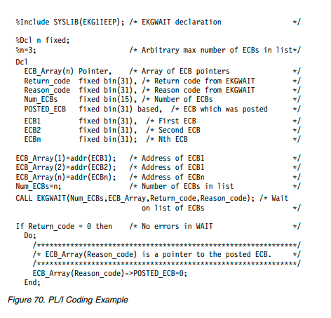
C Coding Example
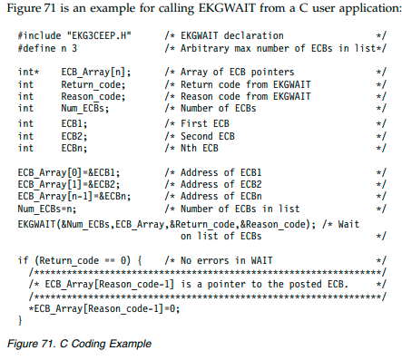
EKGWAIT Usage Notes
The purpose of the ECB_Array is to contain the ECB addresses being set to the
EKG_ECBAddress fields in the EKG_NotificationQueue objects. However, always
include in the ECB_Array the Stop_ECB identified to RODM at connect time. This
can prevent a user from waiting indefinitely, if RODM is stopped.
On a successful return, where Return_code equals 0, the Reason_code is set to an
integer value indicating the index (1 to N) within the ECB_Array of the ECB that
was posted. Clear the ECB being posted immediately after a successful return from
this function call.
An ECB address of 0 passed to this function call causes an immediate return with
a warning return code. But, an ECB address that is not valid can cause an abend or
an indefinite wait.
Notification
When the field to which your application has subscribed changes value, its
notification method is triggered. In this example, if the DisplayStatus field of object
NETRES3 changes, RODM triggers notification method EKGNTHD. EKGNTHD
then compares the new value of DisplayStatus to the thresholds you specified in
the Long_lived_parm parameter of the EKG_AddNotifySubscription function.
If the new value exceeds the specified thresholds, EKGNTHD places a notification
block on notification queue RECOVQ and RODM posts the ECB for the RECOVER
application. Notification methods use the EKG_SendNotification function to place
the notification block on the queue. When the ECB is posted, EKGWAIT returns
control to RECOVER.
RODM posts the ECB for a notification queue when all of the following conditions
are met: v The notification queue exists.
A notification block is added to a previously empty queue.
The ECB pointer for the queue points to a valid ECB.
After RODM posts an ECB for a particular notification queue, RODM does not
post the ECB for that queue again until the queue has been completely drained
and a new block added or until the EKG_ECBAddress field in the notification
queue object is changed.
If you reconnect to RODM and notification subscriptions and notification queue
objects for your user application still exist, the ECB cannot be posted. You must
reset the EKG_ECBAddress field in each notification queue object to a current ECB
address to enable RODM to post the ECBs.
The remaining processing is done by your application.
1. The user application clears the ECB by setting it equal to 0. This enables RODM
to post additional notifications.
2. The application gets the notification blocks from the notification queue using
the EKG_QueryNotifyQueue function. The notification block contains a
Notification_block_type field that indicates the type of event that caused the
notification.
One block is removed for each function call. The response block for this
function indicates the number of notification blocks on the queue in the
Notification_queue_count parameter. The application processes each block on
the notification queue. The EKG_QueryNotifyQueue function must be issued
from the address space that the user application connected from.
In our example, RECOVER calls the EKG_QueryNotifyQueue function once,
specifying the notification queue name RECOVQ.
3. The application uses the notification block information returned in the response
block to initiate its processing. In our example, RECOVER uses the Object_ID
parameter to identify the resource that changed its DisplayStatus. RECOVER
can use the EKG_QueryField function to get the new DisplayStatus value from
the RODM data cache. RECOVER then issues the appropriate commands to
reactivate the failing resource NETRES3.
4. When it finishes processing the notification queue, the user application calls
EKGWAIT to wait until the next notification takes place.
Clean Up
Notification processing uses system resources including memory and processor
cycles. When a notification is no longer needed for an object, delete the
notification.
You can delete a notification in either of the following ways:
Delete the notification queue.
Delete the notification subscription.
If you want to delete all notification subscriptions that use a notification queue,
delete the object of the EKG_NotificationQueue class that represents the
notification queue. Use the EKG_DeleteObject function. RODM deletes the
notification queue and all notification subscriptions that specify that queue. RODM
also deletes any notification blocks that are still on the notification queue.
If you have more than one notification subscription that uses a notification queue,
and you do not want to delete all of the subscriptions, use the
EKG_DeleteNotifySubscription function for each subscription you want to delete.
In this example, you want to shut down NETRES2 for maintenance. To prevent
RECOVER from trying to restart NETRES2, issue the
EKG_DeleteNotifySubscription function and specify NETRES2 with the
Entity_access_info_ptr parameter. The other notification subscriptions are not
affected.
RODM deletes the links between the EKG_User object and the
EKG_NotificationQueue object when you delete a notification queue. When a user
application disconnects from RODM or ends without disconnecting, RODM can
delete the notification queues and subscriptions associated with the user
application. The EKG_StopMode field in the EKG_User object that represents the
object specifies what action RODM takes. See “EKG_User Class” on page 197 for
information about the EKG_StopMode field.
Asynchronous Error Notification
Your user applications can be notified about asynchronous errors and checkpoints
by subscribing to fields in RODM system-defined objects. Subscribe to the
EKG_LastAsyncError field in the EKG_System object to be notified about
asynchronous errors that occur during the execution of asynchronous API requests,
asynchronous methods, or RODM internal processing. Subscribe to the
EKG_LastAsyncError field in the EKG_User object for a user application to receive
notifications only about errors in transactions initiated by that user application.
The EKGNOTF method that is supplied with the NetView program can be used for
these notification subscriptions. See “RODM Notification Methods” on page 489 for
a description of this method. The log record is assigned to the
EKG_LastAsyncError field. This log record information is placed in the user_data
field of notification queue blocks created because of a subscription to the
EKG_LastAsyncError field. User application programs can obtain this information
by calling the EKG_QueryNotifyQueue function.
When an error occurs, the specified notification method is triggered. All user
applications that subscribed to the EKG_LastAsyncError field are notified.
The EKG_LastAsyncError field is changed and any notification methods are
triggered when an error message is written to the log as the result of a method
running asynchronously to a user application. RODM writes error log entries when
a method sets its return code to a value greater than or equal to either the user's
EKG_LogLevel or the Log_level customization parameter specified for an
asynchronous method.
Object Deletion Notification
If your application needs to be notified when certain objects are deleted, the
application can subscribe to those objects with an object-deletion subscription. If the
object is deleted, RODM places a notification block on a notification queue and
posts the ECB for the application.
For the format of the notification block, refer to the description of the
EKG_QueryNotifyQueue response block on page “EKG_QueryNotifyQueue -
Query Notification Queue” on page 427.
The four steps of the RODM notification process (setup, wait, notification, and
cleanup) apply to object-deletion notification, with some differences.
Setup for Object-Deletion Notification
For object-deletion notification, setup differs from the normal RODM notification
process described on page “Setup” on page 324.
1. Connect to RODM. Do not create a notify subfield, install a notification
method, or subscribe to the field.
2. Create a notification queue and its ECB, as described in Step 4 on page 324.
3. The last step in setup is to subscribe to the object. Your application issues the
EKG_AddObjDelSubs function to create an object-deletion subscription for the
object. This function specifies an object, a user application, and a notification
queue. If the object is deleted, RODM places a notification block on the
specified notification queue and posts the ECB for the user application. Specify
the parameters of this function call as follows:
Entity_access_info_ptr
A pointer to the entity access block that specifies the class and object
for which you are creating the object-deletion subscription
User_appl_ID
Set this to the null value. RODM fills in the value that corresponds to
the user application that is issuing this function call.
Notification_queue
Specify the name of the notification queue you created in Step 4 on
page 324. The User_appl_ID part of the name is supplied by RODM.
User_word
You can leave this optional field blank.
Long_lived_parm
When the object is deleted, RODM puts the value of this optional
parameter in the user_area parameter of the response block
Repeat Step 3 on page 330 once for each object you subscribe to. The setup for the
deletion-notification process is complete when the EKG_AddObjDelSubs function
has run successfully for each object.
Wait for Object-Deletion Notification
This step is the same as “Wait” on page 326.
Notification for Object-Deletion Notification
When the object to which your application has subscribed is deleted, RODM places
a notification block on the application's notification queue and posts the ECB for
the application.
The rest of this step is the same as described in “Notification” on page 328.
Cleanup for Object-Deletion Notification
To delete an object-deletion subscription, use the EKG_DelObjDelSubs function
described in “EKG_DelObjDelSubs - Delete Object Deletion Subscription” on page
402.
Connecting to RODM
Before you can run any user API functions, you must connect to RODM using the
EKG_Connect or EKG_ConnectLong API function. When you connect to RODM,
specify an access block containing your user application ID and the name of the
RODM to which you want to connect. RODM sets the Sign_on_token field in your
access block after a successful connect. This value represents your connection to
RODM and must not be changed. If RODM detects that the value in the
Sign_on_token field in your access block is not valid when you request an API
function other than EKG_Connect or EKG_ConnectLong, RODM rejects your API
function request and returns the appropriate reason code.
RODM permits only one connection for each application user ID. Attempts to
connect with a user application ID that is already connected fail, and the
appropriate reason code is returned.
Applications that are cancelled by the operator or are otherwise abended while
they are connected to RODM, are disconnected.
If you chose to disconnect from RODM without purging the subscription
notification queue, upon subsequent connection, all ECB addresses associated with
the notification subscriptions must be reset to point to the new address space ID.
Your application cannot connect to RODM if your application is running in
cross-memory mode. RODM checks for this condition and returns an error reason
code.
After successfully connecting to RODM, RODM creates a user object in the
EKG_User class representing your user application. This user object contains your
application environment and is preserved until your application disconnects. While
you can have multiple concurrent API requests executing in RODM for the same
user application ID, each request uses and possibly modifies the information in the
user object.
For more information about connecting to RODM, see “EKG_Connect - Connect to
RODM” on page 387 or “EKG_ConnectLong - Connect to RODM” on page 388.
Disconnecting from RODM
When an application completes all of its tasks and has no further API function
requests to perform, it disconnects using the RODM EKG_Disconnect API function.
After disconnecting, the sign-on-token is no longer valid. RODM returns an error
reason code if your application subsequently attempts to run another API function
request, unless the API function request is an EKG_Connect or EKG_ConnectLong
function request.
When your application disconnects, RODM performs clean-up of notification
queues, depending on the value of EKG_StopMode in your user object. RODM
might purge all of your user application ID-owned notification queues, queue
elements, and subscriptions, purge only notification queue elements and retain all
notification queues and subscriptions, or purge nothing and retain all notification
queues, queue elements, and subscriptions. If RODM purges all notification
queues, queue elements, and subscriptions, RODM also purges your user object.
Note: Applications that end while they are connected to RODM, are disconnected.
For more information about disconnecting from RODM, see “EKG_Disconnect -
Disconnect from RODM” on page 404.
Chapter 12. Topology Object Correlation
This chapter describes the object correlation function. It includes the following
information: Enabling the correlation function
Correlation concepts
Including your objects in correlation
Correlating SNA topology manager and MultiSystem Manager objects
Customizing the correlation function
Using correlated aggregate objects, a NetView management console (NetView
management console) operator can perform the following tasks:
Navigate between correlated resources
View consolidated data about the correlated resources
Monitor aggregate status of the correlated resources
For more information about using correlated objects, see the IBM Tivoli NetView for
z/OS User's Guide: NetView Management Console.
Enabling the Correlation Function
Object correlation is enabled by loading the FLCSDM8 input file into RODM. To
load FLCSDM8, remove the asterisk (*) from the following line in the CNMSJH12
job:
//* DD DSN=NETVIEW.V6R2M1.CNMSAMP(FLCSDM8),DISP=SHR <-CORRELATE SAMPL
Correlation occurs when an application sets a valid value in a field of a RODM
object that is enabled for correlation. Objects are enabled for correlation by loading
the FLCSDM8 file. Because MultiSystem Manager and SNA topology manager
automatically set the value of these fields, which causes correlation to occur, and
the views are displayed on a NetView management console.
Enabling SNA Topology Manager Object Correlation
To enable correlation for resources managed by SNA topology manager, edit
initialization file FLBSYSD and change the value of the following statement to YES:
WRITE_CORRELATABLE_FIELDS=NO
SNA correlation occurs on PU resources. PU resources are excluded from
TOPOSNA commands that do not include the LOCAL parameter. Use the LOCAL
parameter on any TOPOSNA command issued to resources you want included in
correlation.
The resources on which SNA topology manager provides a correlator value are PU
2.1 workstations. If SNA topology manager does not monitor any PU 2.1
workstations, none of your SNA resources can be correlated. If you know the LAN
MAC address of your SNA resources, you can include them in correlation. Refer to
“Extending Correlation of Objects Created by MultiSystem Manager and SNA
Topology Manager” on page 339.
Enabling GMFHS Object Correlation
To enable correlation for GMFHS resources, set a value on one or more of the
following fields on the GMFHS_Managed_Real_Objects_Class:
aIndMACAddress
Correlater
iPAddress
The FLCSDM8 RODM load input file creates these fields on the
GMFHS_Managed_Real_Objects_Class when it is loaded.
Correlation Concepts
The correlation function is triggered when the value of a field on which the
FLCMCON method is installed changes. Correlation automatically associates
resources managed by different agents. The correlation function runs dynamically
and is implemented using RODM methods. Correlated objects have a common
correlater value, and a correlated aggregate object is used to represent these objects.
When correlation is by IP address or MAC address, the correlated aggregate object
is represented in RODM using aggregateSystem class objects. When correlation is
by a value in the Correlater field, the correlated aggregate object is represented in
RODM using GMFHS_Aggregate_Object_Class objects.
A correlated object is an object of any correlation-enabled class that has a value in
one of the following fields:
aIndMACAddress
iPAddress
Correlater
This value is the correlater value.
The term cross-correlation is used to describe the relationship between two or more
real objects that have an identical correlater value. For example, assume the
following conditions:
The correlation function is enabled.
A system can be part of an internet and part of a sysplex.
The resources are represented by objects in RODM, and, for each object, the
iPAddress field has the value 9.37.65.43.
Because these two objects have identical values for the same field, the objects are
cross-correlated.
Correlation Methods
The following RODM methods implement the correlation function.
The load and customization of these methods is accomplished using the FLCSDM8
RODM load file. For more information, refer to “Enabling the Correlation
Function” on page 333 and “Customizing the Correlation Function” on page 340.
FLCMCONI Method
The FLCMCONI method is an initialization method that loads the FLCMCON
method on classes that support correlation. FLCMCONI is used instead of the
DUIFSTRC RODM load input file because FLCMCONI passes parameters to the
FLCMCON method.
FLCMCON Method
The FLCMCON method is a notification method that is loaded on certain fields of
classes for which correlation is enabled. To determine which classes are enabled for
correlation and the fields on which the FLCMCON method is loaded, browse the
FLCSDM8 RODM load file. FLCMCON runs FLCMCOR.
FLCMCOR Method
The FLCMCOR method is an object-independent method that creates and updates
correlated aggregate objects.
Objects Enabled for Correlation
Loading the FLCSDM8 sample automatically enables correlation for resources that
are managed by MultiSystem Manager, SNA topology manager, and customer
applications that use the GMFHS data model. To determine which classes are
automatically enabled, browse the FLCSDM8 RODM load file. All classes on which
the FLCMCON method is loaded are automatically enabled.
For example, the following code enables correlation by IP address on objects of the
OperatingSystem class, which are created by the MultiSystem Manager IBM Tivoli
Network Manager feature:
OP FLCMCONI INVOKED_WITH (SELFDEFINING)
(
(OBJECTID) EKG_Method.FLCMCON
(CLASSID) OperatingSystem
(FIELDID) ’1.3.18.0.0.3330’.’iPAddress’
(CLASSID) ’1.3.18.0.0.6464’
(CLASSID) ’GMFHS_Managed_Real_Objects_Class’
);
Types of Correlation
There are two types of correlation:
Network address correlation
Free-form correlation
Network Address Correlation
Network address correlation is performed using LAN media access control (MAC)
or internet protocol (IP) addresses.
To include objects in correlation based on a network address, set a value on one of
the following fields:
aIndMACAddress (1.3.18.0.0.5263)
iPAddress
Correlation uses 12-character MAC addresses (for example, 10004BF00943). A
14-character MAC address is supported, but the last 2 characters (the link service
access point) are removed.
A valid IP address consists of numbers and at least two periods (.) to delimit the
numbers.
Free-Form Correlation
Free-form correlation is performed using a free-form string value. Correlation on a
free-form string creates a correlated object with a display name that matches the
string value.
To include objects in free-form correlation, set the string as the value of the
Correlater field. Example valid values include:
Accounting
PresidentsOffice
Building201
London
You can also enter a multipart string value in the Correlater field. Entering a
multipart string enables you to link the correlated object to a hierarchy of
correlated aggregate objects as shown in Figure 72:
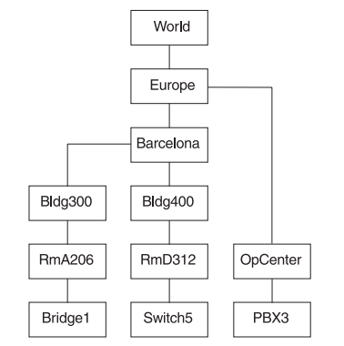
Figure 72. Correlate Objects on Multiple Free-Form Values
To enable correlation to create the objects in Figure 72, set the following values:
Bridge1 Correlator = 'RmA206 Bldg300 Barcelona Europe'
Switch5 Correlator = 'RmD312 Bldg400 Barcelona'
PBX3 Correlator = 'OpCenter Europe World'
This enables you to create or locate a hierarchy of views, based upon
organizational or geographic structure, with one command. As with single value
free-form correlation, for each string value in a multipart string, a correlated
aggregate object is located or created. If parent relationships do not already exist
between the different correlated aggregate objects identified in the multipart string,
they are created.
Commas or blank spaces can be used to delimit a multi-part string. For example, if
you enter a string value of Jane Doe, correlation locates or creates two objects –
Jane and Doe. All of the characters that are supported by the RODM CharVar data type are
supported. You can use an underscore character (_) between string values that you
want to be treated as one correlated aggregate object (for example,
Margaret_Thatcher).
Free-form correlation creates correlated aggregate objects of class
GMFHS_Aggregate_Objects_Class. This enables correlation to locate and link to
aggregate objects created by BLDVIEWS scripts. BLDVIEWS typically includes
objects in views if those objects have a consistent naming scheme (for example,
CPNRTR2 and CPNHST14), it builds views from the top down. Multiple free-form
correlation does not require objects to have a similarity in object naming; it builds
views from the bottom up.
Using BLDVIEWS and topology correlation together,
you can build custom views that match your enterprise.
Correlated Aggregate Object Classes and Names
Correlated aggregate objects are named using the correlater field value of the first
object for which a correlation was found. Valid values include the following values:
v LAN MAC address (for example, 40000A17D006)
v TCP/IP address (for example, 9.37.65.43)
v Free-form correlater (for example, Accounting)
Correlated aggregate objects identified through network address correlation are
created on class aggregateSystem. These objects have a multi-part OSI
distinguished name that includes a MAC address or TCP/IP address as the last
element. For example, 1.3.18.0.0.3519=MultiSys,1.3.18.0.0.6467=40000A17D006.
Correlated aggregate objects identified through free-form correlation are created on
class GMFHS_Aggregate_Objects_Class. These objects are named by a free-form
correlater value, with no other prefix or suffix (for example, Accounting).
For more information about the object names, refer to the aggregateSystem class
description in the IBM Tivoli NetView for z/OS Data Model Reference.
Object names are defined by the value of the object MyName field. The name used
to label these objects on the NetView management console can be either the
MyName field value or a user-defined value. See “Correlated Aggregate Object
Display Labels” for more information about display labels.
Correlated Object Relationships
Resources with identical Correlater field values are represented by one correlated
aggregate object; this includes resources that are managed by different topology
agents.
Relationships are created between correlated resources and correlated aggregate
objects using links. Links enable more detail, configuration parent, and
configuration child navigation between objects and status aggregation.
Correlated Aggregate Object Display Labels
Correlated aggregate objects are displayed using the following symbol:
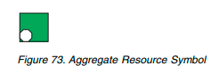
Correlated aggregate object labels are determined by the first value for which a
correlation was found:
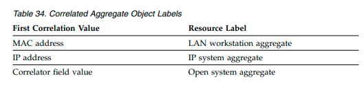
Correlated Aggregate Object Field Values
The correlation function is triggered when the value of a field on which the
FLCMCON method is installed changes. The FLCMCON method triggers the
FLCMCOR method. The FLCMCOR method queries the values of the following
fields of real objects:
aIndMACAddress
segmentNumber
aUniversallyAdministeredAddress
adapters
iPAddress
netAddress
sysLocation
adjacentLinkStationAddress2
linkName
ipHostName
Correlater
The value of these fields is compared to the values of the corresponding fields of
the correlated aggregate object. When a value exists on a real object but not on the
correlated aggregate object, the value is copied from the real object to both the
corresponding field and the DisplayResourceOtherData field of the correlated
aggregate object.
Notes:
1. When a value is assigned to a field on the correlated aggregate object,
subsequent correlations cannot change the value of the field.
2. If you write an application that uses the value of these fields, query the
individual fields rather than parsing the DisplayResourceOtherData field. For
more information about these fields, see the IBM Tivoli NetView for z/OS Data
Model Reference. Use the NetView management console to display data contained in the
DisplayResourcOtherData field. This information is displayed in the NetView
management console Data1 field.
The value in the DisplayResourceOtherData field is not always provided by the
correlation function. Information that is provided by the correlation function is
identified by a lowercase a in the word address.
When you set a correlator value in RODMVIEW, the resultant correlation is only
displayed until the next time that RODM is recycled. That can be days or months,
depending upon how you run your enterprise. When you set correlator values in a
CLIST or BLDVIEWS script, you can rerun that CLIST or BLDVIEWS script, and
restore your customized correlations, after RODM is recycled. For more specifics
on using BLDVIEWS with topology correlation, see the IBM Tivoli NetView for z/OS
User's Guide: NetView Management Console.
Using Correlation for Objects You Create
Objects discovered by MultiSystem Manager agents and SNA topology manager
logicalLink class (PU) objects are automatically correlated. You can extend
correlation to include MultiSystem Manager open data model, GMFHS, and
additional SNA topology manager objects. For more information about SNA
topology manager, see “Correlating SNA Topology Manager Objects” on page 340.
To include objects that you have created in correlation, perform the following
tasks: v Choose a class to use. You can choose any of the classes enabled for correlation
in the FLCSDM8 file. Enabling objects of the open data model requires less
setup, and the FLCSOX01 sample file is provided as an example. If your
application already creates GMFHS managed resource objects, it is easier to
continue using the GMFHS objects.
Set a value on one or more of the following data fields for each object you want
to include in correlation:
– aIndMACAddress (for example, 1.3.18.0.0.5263)
– iPAddress
– Correlater
The aIndMACAddress and iPAddress fields support correlation based on
network addresses and the Correlater field supports free-form correlation.
You can set field values on the objects using RODMVIEW, CLIST, or BLDVIEWS
script. The FLCSOX01 sample file provides an example of a REXX CLIST. This
CLIST demonstrates that if your application already creates RODM objects, you
can include those objects in correlation by adding just one additional line of
code
Extending Correlation of Objects Created by MultiSystem Manager and,
SNA Topology Manager
MultiSystem Manager objects and SNA topology manager logicalLink class (PU)
objects are automatically correlated. If you have correlatable information about
objects that is not discovered by MultiSystem Manager or SNA topology manager
agents, you can extend correlation to these objects. To extend the correlation of
these objects, perform the following tasks:
Determine the name of the object
Set a value on the aIndMACAddress, iPAddress, or Correlater field of the object
Perform any data model-specific tasks necessary to extend the objects. See
“Correlating MultiSystem Manager Objects” on page 340 and “Correlating SNA
Topology Manager Objects” on page 340 for more information.
Remember that SNA topology manager and MultiSystem Manager dynamically
create, delete, and update objects. If you add field values and then subsequently
reacquire topology (for example, by issuing a TOPOSNA or GETTOPO command)
or cold start RODM, the values you added can be lost. Because of this, use a
CLIST or BLDVIEWS script to reset correlatable field values each time topology is
reacquired.
How to Determine Object Names
Object names are defined by the value of the object's MyName field in RODM.
Remember that the name of an object that is displayed in a view is usually a
simplified version of the object's name in RODM. The name that is displayed in a
view usually is not suitable for the object name in RODM. Use RODMVIEW to
determine the MyName field values of existing objects.
For a description and syntax of MyName fields, refer to the IBM Tivoli NetView for
z/OS Data Model Reference.
Correlating MultiSystem Manager Objects
If the FLCMCON method is loaded directly on the field of an object you want to
correlate, set a value on the field. To determine which fields have FLCMCON
loaded, browse the FLCSDM8 RODM load file. This is all that is required for most
MultiSystem Manager objects.
If you want to extend additional network address correlation to objects created by
MultiSystem Manager that have the FLCMCON method loaded on the memberOf
field, create a link on the memberOf field.
For example, if you want to add MAC address correlation to a Monitor class object
that is already correlated on a IP address, create a link on the memberOf field of
that object. The link can be to any other object, and the process of creating the link
is the same as creating other links in RODM.
Note: Free-form correlation using the Correlater field never requires creation of a
link in RODM.
Correlating SNA Topology Manager Objects
SNA topology manager logicalLink class objects are automatically included in
correlation because the value of the adjacentLinkStationAddress field can contain
the MAC address of the PU. The correlation function determines if this field
contains a MAC address. If it does, it treats this field like the aIndMACAddress
field.
Because SNA Topology Manager does not discover TCP/IP addresses, SNA PUs
are not correlated to resources on which an IP address is discovered unless the
MultiSystem Manager IBM Tivoli Network Manager agent also discovers both an
IP address and a MAC address on that resource. One example of a resource that
has a MAC address and an IP address is a Windows workstation that has an SNA
PU and a LAN adapter with IP support. SNA topology manager discovers MAC
addresses only on Windows workstations.
To enable IP address correlation for SNA resources, manually set the address on
the iPAddress field on an object that is enabled in the FLCSDM8 file. Correlation
can then automatically correlate the SNA object to other resources with IP
addresses.
Customizing the Correlation Function
All customization of the correlation function is accomplished using the FLCSDM8
RODM load file. After customization, FLCSDM8 must be loaded into RODM. If
FLCSDM8 was previously loaded, cold start RODM. If FLCSDM8 was not
previously loaded and you have already loaded the other SNA topology manager
and MultiSystem Manager load files, load FLCSDM8 without cold starting RODM.
You must use the EKGLLOAD sample file to load FLCSDM8. Ensure that you
specify the data set and file (FLCSDM8) in the EKGIN3 step.
There are two ways to customize the correlation function:
Change the display name priority
Disable correlation for specific classes
Changing the Display Name Priority
You can change the type of display name for a correlated aggregate object, when
that object is correlated by network address. When the object is correlated by
free-form correlater, the display name is taken from the Correlater field. In that
case, the type of display name cannot by changed.
The fields shown in Figure 74 are used to determine the correlated aggregate object
display name. To determine which correlated aggregate object field is used to label
an object, the correlate function uses a prioritized list of those fields in the
FLCSDM8 file. The correlate function queries each field of the aggregate object in
the order listed until a non-null value is found; this value is used to label the
object. Table 35 lists the default priority used and the agents for which the
priorities are used.
Table 35. Correlated Aggregate Object Default Display Name Priority
| Priority | Name Type | Discovered By |
| 5 | SNA node name | SNATM |
| 6 | LAN MAC address | SNATM |
You can determine which label is displayed by customizing the order in which the
fields are listed.
For example, using the default priority shown in Figure 74, a workstation that
contains a MultiSystem Manager IBM Tivoli Network Manager agent is not named
using the computer name because the Internet does not define a computer name
for managed resources. In this case, the workstation object is labeled using its
internet protocol host name.
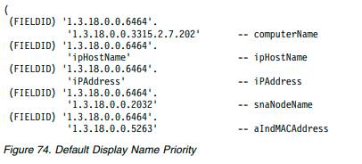
Now, assume that you have customized the FLCSDM8 file to put TCP/IP address
(priority 3) before IP host name (priority 2) as shown in Figure 75 on page 342. In
this case, the TCP/IP address is used to label the workstation object because the
MultiSystem Manager IBM Tivoli Network Manager agent provides both an IP
host name and an IP address, and the IP address name is listed first.
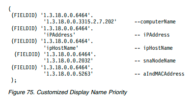
Disabling Correlation for Specific Resources
Correlation is enabled for objects of the classes on which the FLCMCON method is
explicitly loaded in the FLCSDM8 file. If you do not want topology correlation to
run for a class of managed resource objects, comment out the method load
statement that loads the FLCMCON file on the class.
The method load statements are grouped in the FLCSDM8 file by topology agent.
To determine which method load statement to comment out:
1. Determine the object display label for a correlated object.
2. Determine the RODM class that the label represents. Use RODMVIEW to
determine the class, or refer to the class listings in the IBM Tivoli NetView for
z/OS Data Model Reference and match the label with the DisplayResourceType
values listed.
Note: Using the FLCSDM8 file as shipped, the FLCMCON method is loaded on all
of the classes which MultiSystem Manager and SNA topology manager can
automatically correlate upon. It also enables correlation for additional classes you
might want to extend correlation to. Because the memory and CPU usage for
loading a method on an unused class is insignificant, it is not necessary to
comment out the method load statements for unused classes.
Chapter 13. Writing RODM Methods
This chapter describes RODM methods. Methods enable you to maintain data in
RODM and to automate functions related to the resources represented by objects in
RODM. Methods are small executable programs that reside in the RODM address
space. They can be run by user applications, by changes to fields in RODM, by
other methods, and at RODM initialization. Methods are classified by the way they
are run.
The NetView program supplies several general-purpose methods that might meet
some or all of your needs. Before you spend time writing your own methods,
review the methods that are supplied with the NetView program as described in
“Supplied Methods” on page 488 for applicability.
You must install each method, including methods that are supplied with the
NetView program, before you can use it. Each method is represented in RODM by
an object of the EKG_Method class. These objects are created as part of installing
the method. Methods can be dynamically installed, deleted, and refreshed.
Tasks Best Performed with Methods
This section describes which tasks are best performed with methods.
Use a method to do the following:
Perform multiple actions on more than one object or class in the RODM data
cache.
You can write an object-independent method to process numerous API functions
against a set of one or more objects or classes. See “Object-Independent
Methods” on page 344 for more information about object-independent methods.
Load structures and objects at RODM initialization.
The RODM program supports a special form of the object-independent method
called the initialization method. The initialization method can be specified at
RODM start up to provide initialization functions. It can load a class hierarchy
structure and then create objects of the classes. This function enables the RODM
data cache to be established and ready for work following a RODM start up.
The RODM load function can be used as the initialization method. See
“Initialization Method” on page 345 for more information about this method.
Filter data being changed in the RODM data cache.
You can write a change method to provide filtering between an application
change API function request and the field being changed in the RODM data
cache. The change method can alter or reject the change API function request
according to policy, security, or validation requirements. See “Change Methods”
on page 346 for more information about this method.
Filter data being queried in the RODM data cache.
You can write a query method to provide filtering between an application query
API function request and the field being queried in the RODM data cache. The
query method can alter the data returned from the query API function request
according to policy, security, or validation requirements. See “Query Methods”
on page 348 for more information about this method.
Notify applications when data in the RODM data cache changes value
You can write a notify method to notify applications that are subscribed to an
object or class when field values belonging to the object or class are changed.
See “Notify Methods” on page 350 for more information about this method.
v Perform multiple actions on more than one field within an object or class.
You can write a named method to process numerous API functions against a
single object or class. See “Named Methods” on page 352 for more information
about this method.
Types of Methods
A method is logic in the form of an executable program that is loaded into a
RODM address space and is run under certain circumstances. Methods are
classified according to the circumstances under which they are run. Several kinds
of methods are architected into the RODM product to supply specific kinds of
functions. All methods are optional, and the function provided by methods can be
used or not, depending on how classes, objects, and methods are defined,
organized, and applied in RODM. In broad terms, there are two kinds of methods:
object-independent methods, and object-specific methods.
Object-independent methods are like callable subroutines that run inside RODM.
They can act on many different objects in RODM. Object-independent methods
are triggered using the EKG_TriggerOIMethod function, which can be issued by
user applications, by other object-independent methods, and asynchronously by
object-specific methods.
Object-specific methods are run only in the context of a particular object. For
example, they are run by transactions that refer to a specific object. When an
object-specific method is running, it has access only to the data in the fields and
subfields of that object. Object-specific methods in RODM can be triggered as
side effects of a transaction the query, change, and notify methods previously
described or by explicit reference (named methods that are run upon explicit
request).
Methods can refer to data and manipulate data in RODM objects. Through the
routines in the method API, methods can query and change the fields and
subfields of the RODM objects to which the methods have access. Methods must
use the method API to access data in the RODM data cache.
The different methods and their uses are described on the following pages. A
pseudocode description of the method interface is included with each explanation.
These descriptions describe only the parameters, not the exact interface. The
parameters are assumed to be passed to the method by address. The pseudocode
examples (in PL/I style) are not intended to imply PL/I parameter passing
conventions, such as using descriptors for structures. The method interface is
intended to be consistent with the user API style of interface where parameters are
pointers directly to the passed data.
Object-Independent Methods
Object-independent methods are like callable subroutines that run inside RODM.
They are not associated with any particular RODM object or class. They can act on
many different objects in RODM. Object-independent methods are triggered using
the EKG_TriggerOIMethod function, which can be issued by user applications, by
other object-independent methods, and asynchronously by object-specific methods.
Object-independent methods have these characteristics:
They can be run from the user API or the method AP
They can be run by a method for asynchronous execution.
They can access fields in multiple objects.
They can issue multiple method API requests to RODM without the target
objects being affected by other transactions.
Object-independent method parameters are short-lived parameters. These
parameters are defined using the SelfDefining data type and contain
application-defined values. These parameters are established dynamically from the
EKG_TriggerOIMethod function.
While the standard query and change transactions that a user can submit against
RODM are restricted to interactions with one object, an object-independent method
can interact in sequence with, or at the same time with, each of several different
objects. An object-independent method has access to all the objects in RODM
through the method API.
RODM manages the interaction of transactions to ensure that all actions are
completed against target entities before allowing access to the entities by other
transactions.
Object-independent methods have no long-lived parameters associated with them.
One SelfDefining data string, of variable length (up to a maximum of 32767 bytes),
is the only parameter passed to an object-independent method when the method is
run. RODM does not restrict the contents of that string. You must coordinate the
parameter passed when the method is run with the parsing and meaning that the
message attaches to the string of bytes that is passed.
Figure 76 shows how an object-independent method is defined in PL/I. Figure 77
shows how an object-independent method is defined in C.
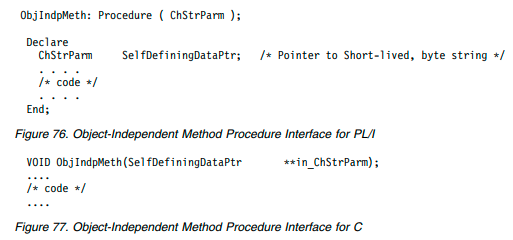
Initialization Method
The initialization method is a special kind of object-independent method. It is run
by RODM at initialization time. When RODM is started with the initialization
method, RODM installs, runs, and then frees the method automatically. The main
purpose of the initialization method is to set up the initial hierarchy of the RODM
data cache. Some functions can be used only by the initialization method. The
RODM load function can be used as the RODM initialization method.
Object-Specific Methods
Object-specific methods are as follows:
Run implicitly as the side effect of a transaction
– Query method (when querying data)
– Change method (when changing data)
– Notify method (after changing data)
Run explicitly by request through RODM User or Method API
– Named method (by specifying field name)
Change Methods
A change method is triggered by RODM when a transaction issues the
EKG_ChangeField or EKG_ChangeMultipleFields function request to change the
value of a field and that field has a change method defined. A change method is
not triggered, however, when a transaction issues the EKG_ChangeSubfield
function request to change the value in the value subfield of the field. A change
method:
Determines the final value of field to be changed, with the exception of fields of
type ObjectLink and ObjectLinkList. Change methods defined on these fields do
not change the value of the field. Instead, they determine whether a link or
unlink action can proceed.
Is inherited unless locally overridden.
Runs in context of a class or object being changed.
The change method parameters are as follows:
field_id
FieldID of the field being changed.
long_lived_parms
A SelfDefining string containing application-defined parameters. These
parameters are provided to the change method when it is installed.
short_lived_parms
A SelfDefining string containing application-defined parameters. These
parameters are provided to the method dynamically during the API
function request that triggers the change method.
data_type
RODM data type of the field being changed.
CharDataLen
The integer length of the new_data if data_type is CharVar or GraphicVar.
This length does not include the null terminator for these data types.
New_data
New data for the field from the API call.
A change method can be associated with a field of an object as a subfield of that
field. A change method is run every time a transaction is run (a user API or
method API transaction) that changes the contents of the field. A change
transaction whose target is a simple field triggers whatever change method has
been assigned to the change subfield of the target field. Change methods can be
triggered by these transactions through either the user API or method API.
A change method is also triggered when a transaction issues the EKG_LinkTrigger
function request or the EKG_UnlinkTrigger function request to link two fields in
two objects and those fields have change methods defined. These change methods
cannot change the value of the fields. The change methods must set a return code
to indicate whether the link or unlink can proceed. If the change methods do not
exist, or if they do not explicitly set the return code, RODM assumes the return
code is zero and the link or unlink proceeds. Change methods on fields other than
ObjectLink and ObjectLinkList are run only when the field on which they are
defined is directly changed. A change method is not run when the same field on
the parent class is changed and the changed value is inherited. A change method is
not run by changes in a child object or class. A change method is not run by
changes to subfields. The triggering of change methods can be avoided by the use
of transactions that manipulate the value subfield of a field.
If a field has a change method defined on it, that change method is responsible for
making any changes to the value of that field; RODM will not change the value of
that field. The change method must use the EKG_ChangeSubfield function to
update the value subfield of the field. If the change method uses the
EKG_ChangeField or EKG_ChangeMultipleFields functions to update the value
subfield, the change method recursively runs itself. RODM detects and blocks the
recursive method execution but does not change the value subfield.
If a change method needs to interact with a resource outside of RODM, it sends
any request to the resource asynchronously and set the appropriate flags to
indicate that the request has been sent. The change method does not wait for a
reply from the real resource before it continues processing.
A change method is associated with a specific field of a specific object. Only a
change to that specific field of that object triggers the change method to be run.
Change methods for a field of an object can automatically exist on the object by
inheritance at the time the object is created. A change method on a field of an
object is not triggered by the creation or deletion of that object.
A change subfield has data type MethodSpec. The MethodSpec data type identifies
the method that is run. It optionally contains long-lived parameters that are passed
to the method when it is run. The long-lived parameters can be used to adapt a
general purpose method to a particular situation.
The long-lived parameters can be a list of field identifiers. They are defined when
the method is assigned to the change subfield. The list of field identifiers is static.
However, the values in the fields are dynamic; they can be changed at any time.
A method can read the contents of fields through the method API. So with a list of
field identifiers specifying which fields contain its parameters, a change method
can find its own execution-time parameters and take the intended actions. Most
methods are written as general-purpose methods by IBM, and several parameters
might be required to adapt the general-purpose method to the specific function to
be performed to manage a change to a field. This design has the advantage of
making parameters to methods visible through the user API for debugging
purposes.
Another parameter (besides the long-lived parameters) is passed to a change
method when the method is run. The function blocks in the user API and method
API for changing fields all include a short-lived parameter, which is SelfDefining
data with a maximum length of 254 bytes. When a function block is filled in, a
requestor can use these 254 bytes for any data that needs to be passed at
invocation time to any methods triggered by the transaction
To change the value subfield of the field, the change method obtains the data
supplied through the API. That information is passed as the fourth and fifth
parameters.
Figure 78 shows example change method parameters for PL/I. Figure 79 shows
example change method parameters for C.
Note: For data types of CharVar and GraphicVar, the input data strings are null
terminated: CharVar strings by X'00', GraphicVar strings by X'0000'.
The return code and reason code for the entire transaction can be controlled from a
change method through calls in the method API available to the method.
Through the method API, a change method has access to:
Data in fields and subfields of the object upon which it is acting
A copy of the function block that triggered this method
Organization of the object including data types of fields
Some of the things a change method can do are the following:
Stop a transaction upon an error condition and set the return and reason codes
using the EKG_SetReturnCode function.
Change fields and subfields of the target object using the EKG_ChangeSubfield
function.
Add a notification using the EKG_AddNotifySubscription function.
Take actions on other objects using the EKG_MessageTriggeredAction function.
Write to the RODM log using the EKG_OutputToLog function.
Query Methods
A query method is run by RODM when a transaction queries the value of a field;
but not run when the value subfield is explicitly queried. The query method:
Can determine final returned data value of the field being queried
Is inherited unless locally overridden
ChngMeth: Procedure ( Field_ID, LLParms, SLParms, DataType, CharDataLen, DataPtr )
Dcl Field_ID FieldID; /* target field of transaction */
Dcl LLParms SelfDefiningDataPtr; /* Pointer to Long-lived field parameters */
Dcl SLParms SelfDefiningDataPtr; /* Pointer to Short-lived Parameter */
Dcl DataType Smallint; /* Data type of field */
Dcl CharDataLen Integer; /* Valid for data type CharVar and GraphicVar */
Dcl DataPtr pointer; /* Pointer to new data from API call */
. . . .
/* code */
. . . .
End;
Figure 78. Change Method Procedure Interface for PL/I
VOID ChngMeth(FieldID *in_FieldID,
SelfDefiningDataPtr **in_LLParms,
SelfDefiningDataPtr **in_SLParms,
Smallint *in_DataType,
Integer *in_CharDataLen,
Pointer **in_DataPtr);
....
/* code */
.... Figure 79. Change Method Procedure Interface for C
Runs in context of a class or object being queried
The query method parameters are:
field_id
FieldID of the field being queried.
long_lived_parms
A SelfDefining string containing application-defined parameters. These
parameters are provided to the query method when it is installed.
short_lived_parms
A SelfDefining string containing application-defined parameters. These
parameters are provided to the method dynamically during the actual API
function request that triggers the query method.
Query methods can be associated with fields of objects. If a query method is
defined for a field, the method is run each time the field is queried using the
EKG_QueryField function through the user API or method API. If a query method
is defined, it is responsible for returning a value for the field to the function that
queried the field. The query method can return the current value of the field, or
the method can return some other value. For example, a query method can issue a
command to some real resource to get the current status of that real resource.
The query can use the EKG_ResponseBlock function to write its response to the
caller-provided response block. If the query method does not use the
EKG_ResponseBlock function, RODM returns the data in the queried field to the
query function. A query method can generate the actual value that is returned. It
can check time stamps to verify that the value of a field is current. If you do not
want to trigger a query method, use the EKG_QuerySubfield function to query the
value subfield of the field rather than querying the field itself.
If a query method submits a command to a real resource to obtain information, it
returns immediately to the caller with a reason code indicating that a request for
new data has been submitted. No method enters a WAIT state.
A query method is associated with a specific field of a specific object. Only a query
of that field of that object triggers the query method to be run.
A query subfield has data type MethodSpec. A query subfield can preserve the
name of a query method to be run and a list of field identifiers specifying
(long-lived) field parameters to be used by the query method in customizing its
behavior to the particular object, field, and environment where the query method
is executing. The query method can read the contents of the field parameters using
routines available through the method API.
A short-lived parameter is also extracted from the function block submitted by the
requesting application and passed to a query method at the time of invocation.
Figure 80 on page 350 shows an example of query method parameters for PL/I.
Figure 81 on page 350 shows an example of query method parameters for C.
QueryMeth: Procedure ( Field_ID, LLParms, SLParms );
Dcl Field_ID FieldID; /* target field of transaction */
Dcl LLParms SelfDefiningDataPtr; /* Pointer to Long-lived field parameters */
Dcl SLParms SelfDefiningDataPtr; /* Pointer to Short-lived Parameter */
. . . .
/* code */
. . . .
End;
Figure 80. Query Method Procedure Interface for PL/I
VOID QueryMeth(FieldID *in_FieldID,
SelfDefiningDataPtr **in_LLParms,
SelfDefiningDataPtr **in_SLParms);
....
/* code */
.... Figure 81. Query Method Procedure Interface for C
Notify Methods
Notification methods are run by RODM after certain functions are made. To
determine which functions run notification methods, see the description for the
function in Chapter 14, “Application Programming Reference,” on page 371.
A notification method:
Generates notifications to subscribed users
Is inherited only from class to object
Runs in context of a class or object being changed
Can propagate knowledge of field changes to:
– Other objects
– Subscribed users
The notification method parameters are as follows:
field_id
FieldID of the field that was changed.
long_lived_parms
SelfDefining string containing application-defined parameters. These
parameters are provided to the notification method when it is installed.
short_lived_parms
SelfDefining string containing application-defined parameters. These
parameters are provided to the method dynamically during the actual API
function request that triggers the notification method.
change_status
Specifies whether or not the changed field value is equal to the old field
value.
user_appl_id
UserID of the user that is to receive the notification.
notif_queue_id
Name of the notification queue that is to receive the notification.
user_word
User-supplied information.
A list of notification methods is associated with each field of a class or object that
has a notify subfield present. The list is called the subscription list for the field.
Every time a field is changed, the associated subscription list of notification
methods is processed, and each method in the list is run. The intent of these
methods is to propagate knowledge of changes both to other objects and to
applications outside RODM that need to be informed about changes. Notification
methods can include logic to selectively notify, such as to notify only when a
threshold is surpassed.
When a change transaction is specified against a field, all notification methods
defined on that field are triggered. These notification methods are triggered
regardless of whether or not a change method is defined on the field and whether
or not the value of the field actually changes. Each notification method is passed a
Change_status parameter by RODM, which informs the method whether or not the
value of the field was changed by the change transaction.
To avoid triggering notification methods, use functions that do not trigger
methods. These functions do not trigger notification methods:
EKG_LinkNoTrigger
EKG_UnlinkNoTrigger
EKG_ChangeSubfield
EKG_SwapSubfield
The subscription list on the child is not processed, and the notification methods are
not run. Notification methods are active only when values in fields are locally
present. This practice is similar to the practice of avoiding triggering change
methods where the value in the associated field is inherited, and a change is made
to the parent field.
Some notification methods can delete themselves after their first execution. For
example, an application submits a RODM transaction that causes a command to be
submitted to the target system where the command is attempting to vary a device
offline. Completion of the request takes time.
The transaction cannot wait for the response, and the application needs to be
informed when the command is complete. The code, which might be a change
method implementing the original transaction, places a notification method in the
subscription (notification) queue for the field. When the device is varied offline, the
notification method pulls itself out of the subscription queue and notifies the
original application that the requested vary command has been successfully run.
When a method calls the EKG_AddNotifySubscription function, that method must
acquire the required information, identified by the data type SubscriptSpec, to
actually perform the function. This information is obtained through
long-lived-parameters and short-lived-parameters.
Notification methods are placed in the subscription list of a field upon an explicit
request made by an application using the EKG_AddNotifySubscription function in
the user API and method API. Notification methods can be deleted from a
subscription list using the EKG_DeleteNotifySubscription function.
The subscription list for a field is always processed in the order that the
notification methods were placed in the subscription queue. The methods are
processed, one at a time, starting with the first method placed in queue.
There is another issue of how inheritance interacts with notification methods.
Notification subscriptions are not inherited from a parent class to a child class.
However, they are effectively inherited from a class to an object, where the class is
the primary parent of the object. Notification subscriptions can be associated with
any class or object. When it is associated with a class and that class field changes,
the notification list on that class field is run. When a change is made to an object
field, the notification subscriptions assigned to the field in that object are run. Any
notification subscriptions assigned to the same field in the primary parent are also
run, enabling you to use a single notification subscription at the class level for all
objects in the class. Methods assigned to an object parent class can use the
“WhereAmI” method API to determine the circumstances under which their
execution has been triggered.
The NetView program supplies four sample notification methods in source format.
Study these methods to learn more about writing your own notification method.
The sample methods are the following members of the CNMSAMP data set:
EKGNEQL
EKGNLST
EKGNOTF
EKGNTHD
These methods are described in “RODM Notification Methods” on page 489.
Figure 82 shows an example of notification parameters for PL/I. Figure 83 shows
an example of notification parameters for C.
NotifMeth: Procedure ( FieldID, LLParms, SLParms, Change_status,
User_Appl_ID, Notif_queue_ID, User_word );
Declare
FieldID Field-identifier, /* Field-identifier of named field *
LLParms SelfDefiningDataPtr, /* Pointer to Long-lived field parameters */
SLParms SelfDefiningDataPtr, /* Pointer to Short-lived Parameter */
Change_status Smallint, /* 0 specifies new data was equal to data*/
/* 1 specifies new data was not equalold data*/
User_Appl_ID ApplicationID, /* unique User identifier */
Notif_queue_ID SubscribeID, /* Notification queue reference */
User_word Anonymous(8); /* remote user spec */
. . . .
/* code */
. . . .
End;
Figure 82. Notification Method Procedure Interface for PL/I
VOID NotiMeth(FieldID *in_FieldID,
SelfDefiningDataPtr **in_LLParms,
SelfDefiningDataPtr **in_SLParms,
Smallint *in_Change_status,
ApplicationID **in_User_Appl_ID,
SubscribeID **in_Notif_queue_ID,
Anonymous **in_User_word);
....
/* code */
.... Figure 83. Notification Method Procedure Interface for C
Named Methods
A named method is indicated by a field defined as MethodSpec, containing:
Method object ID
Long-lived method parameters
A named method:
Allows for multiple coordinated actions against an object
Named method field can also have query, change, notify, prev_val, and time
stamp subfields
The named method parameters are:
field_id
FieldID of the field being run.
long_lived_parms
SelfDefining string containing application-defined parameters. These
parameters are provided to the named method when it is installed.
short_lived_parms
SelfDefining string containing application-defined parameters. These
parameters are provided to the method dynamically during the actual API
function request that triggers the named method.
The method is considered named because it can be referenced (queried, changed
and triggered) using the field name. The field name represents a field in an object
with the data type of MethodSpec. A field of this type contains a method name
and a list of long-lived field parameters that are available to the method when the
method is run. Explicit actions available in the user API and method API are used
to trigger named methods.
Named methods enable you to change more than one field of a class or object.
RODM locks all of the fields of the target object when a named method is run. No
other method or user application can access those fields until the named method
completes. This enables you to coordinate the updates to several fields on a target
class or object.
Because many named methods can all be associated with all objects of a class,
named methods are typically inherited from the class. Many standard transactions
against objects can be implemented by either methods that are supplied with the
NetView program or user-written methods.
A field of data type MethodSpec, a named method field, can have its own query,
change, notify, and other standard subfields. The data in the value subfield of such
a field includes the method name and a list of field parameters. The specified field
parameters can be the targets of actions taken by the named method, or they can
contain arguments to the execution of the named method. As with query and
change methods, the long-lived list of field parameters is determined when the
named method field is assigned a value. The contents of any fields referenced
through the long-lived parameters can be set at any time.
Besides the field parameters, another parameter can be passed at execution time to
a named method by the application that triggers the method. This is called a
short-lived parameter. Unlike long-lived field parameters, it is not preserved in any
way after the named method has run. All short-lived parameters on named
methods must be of data type SelfDefining of maximum length 254. Such
short-lived parameters are a variable length string of bytes that can be structured
in any way that the requesting application and the named method are written to
recognize.
The NetView program supplies a sample named method in source format. Study
this method to learn more about writing your own named method. The sample
method is the member EKGMIMV of the CNMSAMP data set. This method is
described in “RODM Named Methods” on page 493.
Figure 84 shows an example of named method parameters for PL/I. Figure 85
shows an example of named method parameters for C.
NamedMeth: Procedure ( Field_ID, LLParms, SLParms );
Dcl Field_ID FieldID; /* Field-identifier of named field */
Dcl LLParms SelfDefiningDataPtr; /* Pointer to Long-lived field parameters */
Dcl SLParms SelfDefiningDataPtr; /* Pointer to Short-lived Parameter */
. . . .
/* code */
. . . .
End;
Figure 84. Named Method Procedure Interface for PL/I
VOID NamedMeth(FieldID *in_FieldID,
SelfDefiningDataPtr **in_LLParms,
SelfDefiningDataPtr **in_SLParms);
....
/* code */
....Figure 85. Named Method Procedure Interface for C
A named method has access to the same data, and has the same abilities as query,
and change methods. However, the explicit invocation of named methods is at the
discretion of applications using RODM, and named methods are free form in the
function that they provide if the function can be implemented with the available
data and services.
Inheritance in Object-Specific Methods
Query, change, notify, and named methods are all object-specific methods. Of these
methods, only named methods are values in fields of RODM objects.
Query, change, and notify methods are all stored in subfields of objects. On an object, the
named method fields and subfields on fields are inherited from the subfields of the
public classes of that object.
In the same way, the values in named method fields and the values in query and
change subfields can be inherited through primary inheritance, using the standard
principles for supporting inheritance in RODM. Notify methods are inherited from
the primary parent to its object children. They are not inherited throughout the
class inheritance tree. However, the object fields can additionally have local values
that do not override the class-level notification subscriptions. (So standard
inheritance of values does not apply to notification subfields.)
Named methods, query methods, change methods and notification methods can
also all exist on classes. Change methods on classes (as on objects) can be used to
validate changes before they are made, or they can be used to validate a user's
authority to make those changes. Query methods can validate a requestor's
authority to see the requested data, or they can validate data before it is returned.
Likewise, named methods on classes can be used in ways similar to the ways such
methods are used on objects. Complex changes to a class can be run by a named
method, or general-purpose functions, applicable to many individual classes, can
be implemented with named methods. Finally, notification methods are also
valuable on classes.
Change and notification methods on children that are inheriting values from
parents are not triggered when the inherited values are changed on parents.
Therefore, notification methods are required on parents (which can be classes) so
that user applications can be notified when parameters and values change on
parents.
The main purpose of the primary hierarchy of classes is to make it easy to specify
the organization of and default values in RODM objects. The most common values
that are inherited at the object level from the primary hierarchy include:
Methods and parameters to control the management of RODM data to reflect
real-world objects
Policy parameters that indicate standard limits and thresholds
Long-lived characteristics, such as capacity, of RODM objects where those
characteristics are needed to manage real-world objects
These methods and values appear in fields on classes so they can be stated once
and then inherited by many objects through the primary hierarchy.
When a value that is a method is inherited by a child, if that method is triggered
and run for a child, execution takes place in the context of the child. While the
method resided on the parent, only its name and its long-lived parameters are
picked up through the inheritance process. When such a method runs and asks for
the contents of a field, it gets the contents of that field on the child entity.
A query, change, or named method installed on a class can fill two roles. The
method can be the default change method inherited by children and applied in the
context of those children (including children that are objects instead of classes), and
it can be triggered in the standard way (query, change of field, direct invocation) in
the context of the parent.
Be aware that object-specific method you write can sometimes run on an object
and at other times can run on a class. The same kinds of capabilities are available
for both objects and classes, using the same method API calls. Many object-specific
methods look at the WhatIAm field on the current entity to discover the context in
which the method is executing, and different actions might be appropriate in
different contexts.
Query, change, named, and notification methods on fields of classes are triggered
as part of transactions against those classes just as those kinds of methods are
triggered on objects. Also, query, change, and named methods exist on fields of
classes to support inheritance of those methods by objects, but inheritance of
values in notification subfields is not supported in RODM.
If a notification list exists through inheritance, it begins as a null value. A null
value in the notification list field is functionally equivalent to no list at all. Entries
can be added to a notification list by using the EKG_AddNotifySubscription
function.
In summary, named methods and query, change, and notify subfields all function
in the standard way both on private and on public fields of classes. There is no
inheritance involving private fields, but query, change, and notification methods
are run when the corresponding field is queried or changed. When a field is on a
class (as with fields on objects), a change transaction for the field triggers change
and notification methods, but a change transaction for the value subfield of a field
does not trigger change and notification methods. This function is the same as that
supported for objects
Null Method
RODM provides a special method named NullMeth. You can use the NullMeth
object ID in place of any object specific method. NullMeth returns control to its
caller without doing any processing. The value NullMeth can be inherited in a
field or subfield from a parent class. If the value of a field of type MethodSpec is
queried for a null method, the ObjectID for NullMeth is returned in the response
block.
Using the NullMeth method name, a query or change subfield that is inherited can
be set to do nothing. The effect is the same as if the local subfield does not exist.
This is useful where the standard function for a field or subfield is to take some
action, but there are a few exceptions where that function is locally overridden to
do nothing.
Similarly, an empty notification list acts like no list exists. If the corresponding field
changes, no notification methods are triggered, and no one is notified of the event.
Deciding Which Method Type to Use
Before you use a method, you must decide which type of method you need to use.
What type of method you use depends on the task you want the method to
perform.
When to Use an Object-Independent Method
You use an object-independent method if you want to efficiently manipulate more
than one entity in the RODM data cache. An object-independent method can
change or query any field in any class or object in the RODM data cache.
When to Use an Object-Specific Method
Object-specific methods are methods that have entities specifically associated with
them. You use an object-specific method if you want to manipulate only one entity
in the RODM data cache. The specific entity that is manipulated is determined at
run time and can be different each time that the method is triggered. To run an
action against another object or class, an object-specific method can use the
EKG_MessageTriggeredAction function. An object-specific method can also trigger
the notification method to inform a user application about an event.
There are four types of object-specific methods:
Query method>
Change method
Notify method
Named method
Each of these methods is designed to perform a specific task and can perform that
task only on the entity to which it is associated; it cannot access fields in any other
entity. Additionally, object-specific methods can call only the API functions that are
designed to be callable from these methods. See “Other Services Available to
Object-Specific Methods” on page 368 for a list of API functions that are available
to object-specific methods.
Query Method
This object-specific method is triggered when a field that has a non-null query
subfield is queried in response to an EKG_QueryField API function. The query
method ensures that the data returned to the caller of the EKG_QueryField API
function is correct and current.
Use this method to refresh data in an entity field that might be outdated or to
enforce policy procedures, validation, or security on the data in the field.
Change Method
This object-specific method is triggered when a field that has a non-null change
subfield is changed in response to an EKG_ChangeField function, an
EKG_ChangeMultipleFields, an EKG_LinkTrigger function, or an
EKG_UnlinkTrigger function. The change method ensures that the functions
change, link, or unlink the fields correctly by enforcing data security, data validity,
and even policy requirements.
Use this method to enforce policy procedures, validation, or security on the data in
an entity field.
Notify Method
This object-specific method is triggered when the value in a field that has a
non-null notify subfield is changed. The notify method notifies the applications
that are subscribed to the field that the value of the field has changed.
Use this method to notify an application program of a change in the field value of
an entity field when that information is essential to the operation of the
application.
Named Method
This object-specific method is triggered explicitly by a call to the
EKG_TriggerNamedMethod API function. A named method has the capability of
performing multiple API functions on all fields within a particular entity. RODM
implicitly locks the entity while the method is running. No other method or
application can query or change any of the fields of the target entity until the
Named method returns control to RODM.
This method is used to perform multiple API functions on a single entity where it
is critical that no other method or application can query or change the entity's
fields.
Using the Method API
To write methods for RODM, access to RODM data and services is required. The
method API provides a set of entry points to RODM that can be called by
methods.
A variety of services are available to methods. Some services are available only to
object-independent methods, and some are available only to object-specific
methods.
Method API calls to RODM pass the following parameters:
Transaction information block
Function block
Response block
The function block can point to additional parameters, such as an entity access
information block and a field access information block, which identify the target of
the function. The response block is required only for some functions.
The transaction_info_block, function_block, and response_block have the same
format as the blocks used by the user API. Table 36 on page 358 lists where you
can find more information about these blocks.
Table 36. Additional Information About Blocks
| If You Want More Information | on See Page |
| Transaction_info_block | 312 |
| Response_block | 319 |
| Function_block | 312 |
The CALL statement from the PL/I or C language program transfers control to the
code segment EKGMAPI. The method must be link-edited with the EKGMAPI
module during the link-edit step. Figure 86 shows an example PL/I CALL
statement.
Declare EKGMAPI Entry( structure, structure, structure );
Call EKGMAPI( transaction_info_block,
function_block,
response_block /* Null pointer => omitted */
);
Figure 86. Method API Interface Declaration and Invocation Example
Register Conventions
The method code must follow this register convention:
Register 1
Points to the first of three consecutive memory locations (a parameter list)
that contains addresses of the transaction_info_block, function_block, and
response_block.
Register 12
Is reserved for RODM runtime environment. This register must be
preserved by the method. For code written in PL/I and C, this register
requirement is consistent with the generated code.
Register 13
Contains the address for the 72-byte save area of the calling program.
Register 14
Contains the return address for the calling program.
Register 15
Contains the entry address for the EKGMAPI module.
Usage Notes
The details of all RODM functions are specified in function blocks. The method
builds a function block and passes it to RODM to request a desired transaction.
The method API functions are described in Chapter 14, “Application Programming
Reference,” on page 371.
The entity_access_information data, pointed to by the function block, is interpreted
the same way for method API calls from object-independent methods as it is from
user API calls. However, class and object information is ignored if the call is made
from an object-specific method.
The object-specific change, query, notification, and named methods can only access
fields within the object or class from which the method API call is performed.
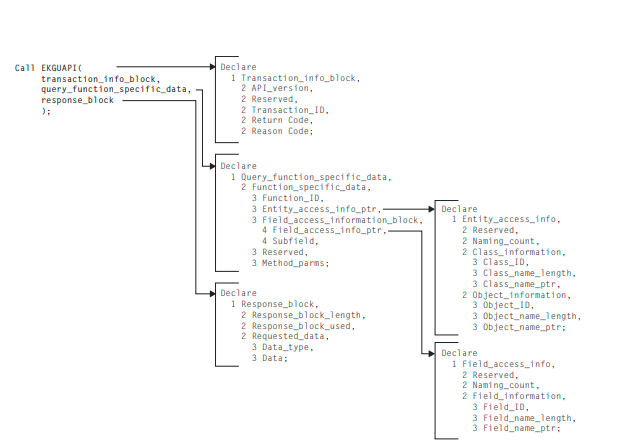
Figure 87. Method API Query Field Control Block Sample
API Query Function Control Block Example
Method Parameters
Many transactions have optional parameters that are either being passed to or
installed with methods. There are two kinds of method parameters:
Long-lived parameters
Short-lived parameters
Long-Lived Parameters
The long-lived parameters are statically defined parameters.
Long-lived parameters are:
Valid only for object-specific methods
A variable length, SelfDefining string of data
Restricted to 254 bytes
Internal meaning is user-defined and user-interpreted
Long-lived parameters are saved in RODM with a method at the time the method
is assigned to a subfield, such as when a notification method is installed by the
EKG_AddNotifySubscription function or when a named, query, or change method
is assigned to a field or subfield.
These long-lived parameters are not immediately used, but are saved until the
corresponding method is run (by the appropriate triggering mechanism), and they
are made available to that method when the method runs. In this way, general
purpose methods can be written and the parameters that provide the desired
function specified when the method is assigned to a field or subfield.
Long-lived parameters have the form of a variable length, SelfDefining data string
where the length is a maximum of 254 bytes. The content of the 254 bytes of data
is not specified by RODM; it is determined by specification of that particular
method's interface. The contents of the actual SelfDefining data string cannot be
changed after it is specified during method assignment to a field. However, if that
long-lived parameter contains a reference to a field within an object, the value of
that field can be changed at any time.
Short-Lived Parameters
Short-lived parameters are dynamically defined parameters. Short-lived parameters
have the following characteristics:
Internal meaning is user-defined and user-interpreted for both object-specific
and object-independent methods when the method is run using an API request.
They are a variable length, SelfDefining string of data.
They are restricted to 254 bytes for object-specific methods.
They are restricted to 32767 bytes for object-independent methods.
Short-lived parameters are not prestored. They are supplied through the specific
transaction request API and are made immediately available to methods being
triggered by the transaction. These parameters always have the form of a variable
length SelfDefining data string.
Short-lived parameters passed to object-independent methods through the User
API can be up to 32767 bytes, but short-lived parameters passed to object-specific
methods are restricted to 254 bytes. The meaning of these strings is not defined or
limited by RODM. RODM sees only a string of bytes. The requesting user
application and the methods being triggered must be written to agree on the
contents of this string of bytes.
Installing and Freeing Methods
Before an object-specific method can be assigned to a field or subfield of an object,
and before an object-independent method can be run, the method must be installed
in RODM. To install a method, create an object of the EKG_Method class.
To install a named method, follow these steps:
1. Determine where you want to install the method.
For named methods, you must use a field of type MethodSpec on either a class
or an object.
2. Create an object of the EKG_Method class.
Creating this object returns to you the object ID of the newly created object.
3. Use the EKG_ChangeField, the EKG_ChangeSubfield, or
EKG_ChangeMultipleFields functions to set the value of the MethodSpec field
to the object ID and any long-lived parameters required by your method.
You can also install methods using the RODM load function. When you create an
object in the EKG_Method class, RODM loads the method into its address space.
Attempting to assign a method name to a field or subfield before the method has
been installed results in an error return code from the change transaction.
If an installed method needs to be changed, the EKG_Refresh field in the
EKG_Method class enables you to load a new copy of the method into RODM.
Trigger the named method specified in the EKG_Refresh field of the method object
you want to reload to load the new copy of the method from the librar
When a method is no longer needed, a user can free the storage taken up by the
method and can purge the method's name and address from internal RODM tables
by executing a delete object transaction against the method object. A method can
only be freed if it is not assigned as a value to any field or subfield in RODM.
After method has been freed, it cannot be assigned to a field or subfield, and it
cannot be run as an object-independent method until it is re-installed.
While other methods need to be installed before use, the null method, NullMeth, is
always installed and cannot be freed. An attempt to install or free NullMeth results
in an error return code from RODM. Therefore, the method name NullMeth is
reserved in RODM, and cannot be used for a user-written method. Other methods
that are supplied with the NetView program must be installed before use just like
user-written methods.
Synchronous and Asynchronous Execution of Functions
If a method triggers a function or another method, the triggered function or
method runs synchronously with the triggering method. The triggering method
stops running and does not resume processing until the triggered function or
method finishes and returns. The method API provides the
EKG_MessageTriggeredAction function, which provides a method with the
capability to trigger a function or another method to run asynchronously with it.
The triggering method continues to run while the triggered function or method
starts, processes, and finishes.
Although the EKG_MessageTriggeredAction function is intended to allow an
object-specific method to access entities in the RODM data cache other than the
one it is associated with, it can also be called by an object-independent method.
Also, the EKG_MessageTriggeredAction function enables the following functions to
run asynchronously with the triggering method:
Change or swap the contents of a field or subfield
Link or unlink two objects
Revert inheritance of a field
Create and delete objects
Method Anchor Service
RODM provides a callable method anchor service that will return a pointer to an
8-byte work area. This area is cleared to zeros prior to invoking the method, and
the contents of the area is preserved when the method causes other methods to be
triggered.
It is intended that this area be used for communication between the component
modules of large, complex methods. Note that it cannot be used to communicate
between methods, because it is cleared by RODM each time a method is run.
Run the EKGMANC service routine using the following code for PL/I:
DCL WORK_AREA CHAR(8) BASED(WORK_AREA_PTR);
DCL WORK_AREA_PTR POINTER;
CALL EKGMANC(WORK_AREA_PTR);
For C use the following code:
char *work_area_ptr;
EKGMANC(&work_area_ptr);
There is no return or reason code from the EKGMANC call. The address of the
work area is always returned.
Coding Your RODM Method
The following sections describe some of the details of writing your own methods.
These sections include information about compiler options, link-editing, and
restrictions. Be sure to review both the general restrictions and the restrictions for
the programming language you are using.
Installation Written Methods
Installation written methods can be written in PL/I or in C. These methods can use
the multicultural support of the PL/I language. DBCS character strings can be
manipulated as graphic constants.
Installation supplied methods can reference RODM data stored in either SBCS or
DBCS formats.
After your method has been coded, you can run the method using test data and
debugging aids to find any syntax or logic errors. Refer to the IBM Tivoli NetView
for z/OS Programming: PL/I and C for additional information. Install your method by
link-editing it to the appropriate user library pointed to by the STEPLIB DD
statement in your start up JCL for RODM.
NetView Methods
The NetView program includes a basic set of RODM methods. You can write your
own methods in either PL/I or C. You can supplement or replace methods that are
supplied with the NetView program with your methods. All methods that are
supplied with the NetView program reside in the CNMLINK target library for the
NetView program.
Note: Enterprise PL/I for z/OS cannot be used to compile method code, including
your method code and method code that is supplied with the NetView program.
Currently, the following methods are supplied with RODM:
EKGNOTF
Notify for any change
EKGNLST
Notify if changed value is equal to one value in a list of values
EKGNEQL
Notify if changed value is equal to a specific value
EKGNTHD
Notify if changed value is within a specified threshold
EKGCTIM
Change method to trigger an Object-independent method to complete an
action asynchronously
EKGMIMV
Named method to increment a value
EKGSPPI
Object-independent method used by the RODM automation platform
All notification methods return, in the notification block, the current value,
previous value, and time stamp (if these subfields are defined) from the field that
is causing the notification message.
The methods that are supplied with the NetView program for RODM are described
in the following sections on a functional basis. All parameters that are passed to
methods are specified as SelfDefining data strings.
Programming Language Specific Preprocessor Statements
When compiling your program or linking your source code, add the following
preprocessor statements.
Compiling IBM C Methods
If you are compiling your methods using the IBM C language, follow these
guidelines:
Code the following pragma statement:
#pragma linkage(csect,PLI)
where csect is the name of the external entry-point csect.
If any RODM control blocks are referenced in the modules, include file
EKG3CINC.H in your source file. This file includes all of the RODM function
and response blocks, and the function prototype statements for the RODM entry
points EKGMANC, EKGUAPI, EKGMAPI, and EKGWAIT.
If no RODM control blocks are referenced in the modules but the modules do
call EKGMANC, EKGUAPI, EKGMAPI, or EKGWAIT, include file EKG3CEEP.H
in your source file.
Do not specify the RENT option when compiling.
The following is an example of IBM C source for coding a method:
#pragma linkage(thisproc,PLI)
#include "EKG3CINC.H"
/* or */
#include "EKG3CEEP.H"
void thismethod(void arg)
{
/* code */
}
Compiling IBM PL/I Methods
If you are compiling your methods using the IBM PL/I language, follow these
guidelines:
If any RODM control blocks are referenced in the modules, include file
EKG1IINC in your source file. This file includes all of the RODM function and
response blocks, and the function prototype statements for the RODM entry
points EKGMANC, EKGUAPI, EKGMAPI, and EKGWAIT.
If no RODM control blocks are referenced in the modules but the modules do
call EKGMANC or EKGMAPI, include file EKG1IEEP in your source file.
Specify the REENTRANT option when compiling.
Specify the MACRO preprocessor compiler option if you include RODM macros
in your method.
The following is an example of IBM PL/I source for coding a method:
*PROCESS MACRO;
thismethod: proc;
%include ekglib(EKG1IINC);
or
%include ekglib(EKG1IEEP);
/* code */
end thismethod;
Linking Methods that Call EKGMAPI Directly
Specify the following link-edit control statements when linking a method that calls
EKGMAPI directly:
INCLUDE SYSLIB(EKGMAPI)
ENTRY method_name
NAME method_name(R)
Specify these link-edit options:
AMODE=31
RMODE=ANY or RMODE=24
RENT
Restrictions on Methods
All RODM methods must run in PSW key 8, which is the default. Do not change
the PSW key in any method.
PL/I Language Restrictions
Installation defined methods written in PL/I require a PL/I compiler that is
supported by RODM. These PL/I programs are expected to clean up after
execution is complete for a particular invocation; all dynamically allocated storage
is freed. In addition, PL/I programs that run in the RODM address space must
observe certain the following restrictions:
Use of PLITEST
The PLITEST facility is not available to programs running in the RODM address
space.
Use of FETCH and RELEASE
PL/I procedures cannot be fetched or released by other PL/I procedures. The
user API supports adding and deleting methods. These services can be used in
place of FETCH and RELEASE.
Use of DATE built-in function
The PL/I DATE built-in function cannot be called by a program running in the
RODM address space.
Use of TIME built-in function
The PL/I TIME built-in function cannot be called by a program running in the
RODM address space.
Use of file I/O
PL/I file I/O cannot be used by programs running in the RODM address space.
No RODM method attempts to access SYSPRINT. However, the RODM output
to log function can be used for file I/O.
Interlanguage communication
Interlanguage calls to COBOL and FORTRAN routines cannot be used. Only
interlanguage calls to C and assembler are permitted.
Delays
The execution of a method cannot be suspended. Methods complete as soon as
possible.
Wait
The execution of a method cannot be suspended.
Use of PL/I DISPLAY statement
The PL/I DISPLAY statement writes its output to the RODM type-1 log record.
Because of performance and logging impacts, the PL/I DISPLAY statement is not
usually used. Instead, use the EKG_OutputToLog API function.
Use of PL/I multitasking
The PL/I multitasking facilities cannot used. Task management is handled by
RODM facilities and not the PL/I facilities. The task, event, and priority options
of the CALL statement cannot be used, and do not use the COMPLETION,
STATUS, and PRIORITY built-in functions.
Use of MAIN option
User methods cannot be coded with the PL/I MAIN option of the PROCEDURE
statement.
Linkage field
All methods must be reentrant. In addition to writing reentrant code, the
REENTRANT option of the PROCEDURE statement must be used.
Cannot use controlled storage variables, or anything using pseudo-register
vectors, such as file I/O and fetch/release
Programs must not request CHECKPOINT, SORT, or PLIDUMP
PL/I options for CHECK and FLOW must not be used
Use of On-Units and Signal
– PL/I programs cannot perform attention handling; that On-unit will not get
control
– PL/I programs must not signal ERROR or FINISH
– PL/I programs must not contain On-error or On-finish statements
C Language Restrictions
Methods must be compiled using the NORENT option. Methods must not be
prelinked using the C prelink facility.
The following C functions cannot be used in RODM methods:
Atexit()
Exit()
Main()
All file and stream input/output statements and library functions
Do not specify the static storage class specifier for any data in a method.
The RODM output to log function can be used for file input/output.
Restrictions in General
An object-specific method can query and manipulate only the object or class with
which the method is associated.
The following are restrictions on methods:
Named methods
Named methods can be run to run synchronously with the caller directly from
the user API, by an object-independent method through the method API, or by a
named method through the method API. Also, named methods can be triggered
to run asynchronous to the caller through the message interface provided in the
method API.
Named methods cannot be triggered for asynchronous execution through the
user API.
Object-independent methods
Object-independent methods can be run to run synchronously with the caller
from the user API or the method API. Also, they can be triggered from any
method, through the message interface provided in the method API, to run
asynchronous to that method.
Object-independent methods cannot be triggered for asynchronous execution
through the user API.
Change methods
Change methods cannot be used on system-defined fields. See “System-Defined
Fields” on page 207 for a complete list of these fields.
Change methods used on LINK fields, that is the fields of data type ObjectLink
or ObjectLinkList, are triggered by EKG_LinkTrigger and EKG_UnlinkTrigger
functions. These change methods have the following restrictions:
– They cannot change fields.
– They cannot perform a link or unlink function.
– They must set a return code if the return code is non-zero.
- A zero return code allows the link or unlink to continue.
- A non-zero return code prohibits the link or unlink.
- If the change methods exist, the return codes from the change methods
defined to both objects must be zero in order for the link or unlink to
continue.
Notification methods
A particular combination of a User_appl_ID, notification method, SubscribeID,
and long-lived parameters uniquely specify a notification method and can be
assigned only one time to a particular notification subfield.
All methods
– All methods must be written as reentrant.
– Methods cannot query a notification queue or suspend their own execution.
– When RODM is operating on a z/OS system, methods must adhere to
operating system constraints placed on applications running in cross-memory
mode; for example, the methods must not use any service that requires the
execution of an IBM z/Architecture® SVC instruction.
– If a method uses recovery routines such as ESTAE, ESTAX, SPIE, or STAE,
the recovery routines must be set up to percolate so that RODM regains
control after any abend.
– Use of the method API to synchronously run another method must not cause
recursive execution of any previously run method.
– The response block overflow buffer is not available to methods. If the
response block supplied by a method is too small for the data returned by the
function, the data that does not fit in the supplied response block is
discarded.
RODM Method Services
Some RODM functions can be used by all types of methods; others can be used
only by certain types of methods. The following sections lists the types of methods
and the RODM functions that each can use.
Services Available to both Object-Specific and
Object-Independent Methods
When you design your program, you can implement the following functions,
available for use in both object-independent and object-specific methods.
Querying RODM Data
– EKG_QueryField (See “EKG_QueryField - Query a Field” on page 416)
– EKG_QueryMultipleSubfields (See “EKG_QueryMultipleSubfields - Query
Multiple Value Subfields” on page 424)
– EKG_QuerySubfield (See “EKG_QuerySubfield - Query a Subfield” on page
432)
– EKG_QueryEntityStructure (See “EKG_QueryEntityStructure - Query
Structure of an Entity” on page 415)
– EKG_QueryFieldStructure (See “EKG_QueryFieldStructure - Query Structure
of a Field” on page 421)
– EKG_QueryFieldID (See “EKG_QueryFieldID - Query Field Identifier” on
page 418)
– EKG_QueryFieldName (See “EKG_QueryFieldName - Query a Field Name”
on page 419)
Actions against RODM Data
– EKG_ChangeField (See “EKG_ChangeField - Change a Field” on page 380)
– EKG_ChangeMultipleFields (See “EKG_ChangeMultipleFields - Change
Multiple Fields” on page 381)
– EKG_ChangeSubfield (See “EKG_ChangeSubfield - Change a Subfield” on
page 383)
– EKG_RevertToInherited (See “EKG_RevertToInherited - Revert to Inherited
Value” on page 435)
– EKG_AddNotifySubscription (See “EKG_AddNotifySubscription - Add
Notification Subscription” on page 377)
– EKG_DeleteNotifySubscription (See “EKG_DeleteNotifySubscription - Delete
Notification Subscription” on page 398)
– EKG_TriggerNamedMethod (See “EKG_TriggerNamedMethod - Trigger a
Named Method” on page 445)
Additional Method Support
– EKG_SendNotification
– EKG_MessageTriggeredAction
– EKG_SetReturnCode
– EKG_OutputToLog
– EKG_ResponseBlock (can be used in named and query object-specific
methods and object-independent methods)
– EKG_QueryFunctionBlockContents
This list of query and action functions is a subset of the transactions available to
RODM users through the user API.
Both the user API and method API use the same function blocks to specify the
function requested for queries and actions with the queries generating responses
that are returned in response blocks. Also, a named method can generate data that
is returned in a response block.
See Chapter 11, “Writing Applications that Use RODM,” on page 305 for the
formats for all these function blocks and response blocks. As in the user API, the
user of the method API is responsible for allocating and freeing the storage in
which function and response blocks reside. The method API function blocks for the
additional method support functions are described in this section.
Other Services Available to Object-Independent Methods
The following additional services are available to object-independent methods
through the method API and the user API.
EKG_LinkNoTrigger, EKG_LinkTrigger (See “EKG_LinkNoTrigger,
EKG_LinkTrigger - Link Two Objects” on page 407)
EKG_UnlinkNoTrigger, EKG_UnlinkTrigger (See “EKG_UnlinkNoTrigger,
EKG_UnlinkTrigger - Unlink Two Objects” on page 448)
EKG_CreateObject (See “EKG_CreateObject - Create an Object” on page 393)
EKG_DeleteObject (See “EKG_CreateObject - Create an Object” on page 393)
EKG_TriggerOIMethod (See “EKG_TriggerOIMethod - Trigger an
Object-Independent Method” on page 447)
Other Services Available to Object-Specific Methods
The following additional services are available only to object-specific methods:
EKG_WhereAmI
EKG_QueryObjectName
Services Available to the Initialization Method
The initialization method is the only method that can use the following functions.
The method can run these functions at RODM initialization time to create the
RODM data structure and load the data into the RODM data cache.
Administrative functions
– EKG_CreateClass (See “EKG_CreateClass - Create a Class” on page 390)
– EKG_CreateField (See “EKG_CreateField - Create a Field” on page 391)
– EKG_CreateSubfield (See “EKG_CreateSubfield - Create a Subfield” on page
394)
Control functions
– EKG_Checkpoint (See “EKG_Checkpoint - Checkpoint RODM to DASD” on
page 384)
The access to the above mentioned functions is similar to the access available
through the user API. These functions are run by calls to RODM using the method
API. Use of these functions requires the standard function block definitions.
The method API functions and interfaces available to the initialization method also
include all those enabled in object-independent methods, with the following
exceptions. Do not use these exceptions within the initialization method.
EKG_SendNotification
– This function fails because no Notification_queues can be registered at the
time the initialization method is running.
EKG_ResponseBlock
– No response block is passed to the initialization method, so the data is lost.
EKG_QueryFunctionBlockContents
– No function block is used to initiate the initialization method execution, so no
data is available.
EKG_CreateObject to create an EKG_NotificationQueue object
– Notification queues are named by concatenating a User_appl_ID to the queue
name. This function always fails for the initialization method because no
User_appl_ID is available during initialization.
If the initialization method uses the message interface to start an asynchronous
task, RODM initialization continues without waiting for the completion of that
asynchronous task.
RODM Method Library
To access the method API services, RODM provides a library that contains entry
points for method API services. This library is called the RODM Method Library
and is given the default name CNMLINK.
This library is especially intended for use with C and PL/I programs. To access a
service such as EKGMAPI, declare EKGMAPI as an external entry in your
program. To resolve the external name, use the CNMLINK library.
Member EKGMIMV of data set CNMSAMP in the sample library contains an
example showing how EKGMAPI can be called from a named method to
increment the value of a specified field by the value of a field.
Chapter 14. Application Programming Reference
The details of all transactions against RODM data are specified in function blocks.
A user builds a function block and passes it to RODM to request a desired
transaction. All function blocks contain a Function_ID which specifies the function
being requested from RODM.
Summarizing RODM Functions
This chapter describes each of the RODM functions. The major categories of
functions follow: v Access functions
Control functions
Administrative functions
Action functions
Query functions
RODM user API services
RODM method API services
See Chapter 11, “Writing Applications that Use RODM,” on page 305 for an
explanation of how function blocks are used in application programs. See
Chapter 13, “Writing RODM Methods,” on page 343 for an explanation of how
function blocks are used in methods.
Access Functions
Access functions enable a user application program to connect to and disconnect
from RODM.
EKG_Connect or EKG_ConnectLong: Connect to RODM
The connect function is called to connect the user to RODM.
EKG_Disconnect: Disconnect from RODM
The disconnect function is called to end the connection between the user
and RODM.
Control Functions
Control functions allow a user application program that has the appropriate access
level to checkpoint RODM data to DASD or to stop RODM, with or without
checkpointing data.
EKG_Checkpoint: Checkpoint RODM
Checkpoint RODM data to DASD.
EKG_Stop: Stop RODM
Stop the RODM subsystem.
Administrative Functions
Use the RODM administrative functions, with the appropriate function blocks
passed as parameters, to delete or create classes, fields, and subfields. Because
response blocks are not needed in administrative calls, set the response block
pointer to null.
When a RODM class is initially created, it contains the system-defined fields and
the public fields of its primary parent. The values of these fields are inherited from
their primary parent. Classes are differentiated from their parent by the existence
of additional fields or by setting different values in the fields that do exist. Most
frequently, a child class needs to have more fields than exist on the parent. These
additional fields must be explicitly added to the class. RODM has no set limit of
the number of fields a class can contain.
You can add a field to a class. You can add a subfield only to a field that is already
in place. You cannot add a field directly to an object.
EKG_CreateClass: Create a Class
Create a new class in the RODM data cache.
EKG_CreateField: Create a Field
Add a new field to a class.
EKG_CreateSubfield: Create a Subfield
Add a new subfield to a field in a class.
EKG_DeleteClass: Delete a Class
Remove a class from the RODM data cache.
EKG_DeleteField: Delete a Field
Delete a field from a class.
EKG_DeleteSubfield: Delete a Subfield
Delete a subfield from a field in a class.
Action Functions
Action functions change values, create and delete objects and links between
objects, add and delete notification subscriptions, and trigger named and
object-independent methods. Action functions can be submitted in list form using
the EKG_ExecuteFunctionList function to enable multiple actions with a single
interface call.
EKG_AddNotifySubscription: Add a Notification Subscription
Subscribe to a field.
EKG_AddObjDelSubs: Add an Object Deletion Subscription
Subscribe to an object for notification of deletion.
EKG_ChangeField: Change a Field
Change the value of a field.
EKG_ChangeMultipleFields: Change Multiple Fields
Change the value of multiple fields of an object.
EKG_ChangeSubfield: Change a Subfield
Change the value of a subfield.
EKG_CreateObject: Create an Object
Create an object in the RODM data cache.
EKG_DeleteNotifySubscription: Delete a Notification Subscription
Delete a subscription to a field.
EKG_DeleteObject: Delete an Object
Delete an object in the RODM data cache.
EKG_DelObjDelSubs: Delete an Object Deletion Subscription
Delete a subscription to an object.
EKG_LinkNoTrigger: Link Two Objects
Link two objects; do not run notify methods.
EKG_LinkTrigger: Link Two Objects
Link two objects; run notify methods.
EKG_RevertToInherited: Revert to Inherited Value
Remove the local copy of the data value from a field and replace it with
the inherited value.
EKG_SwapField: Swap a Field
Compare and swap field data with new data.
EKG_SwapSubfield: Swap a Subfield
Compare and swap subfield data with new data.
EKG_TriggerNamedMethod: Trigger a Named Method
Run a named method.
EKG_TriggerOIMethod: Trigger an Object-Independent Method
Run an object independent method.
EKG_UnlinkNoTrigger: Unlink Two Objects
Unlink two objects; do not run notify methods.
EKG_UnlinkTrigger: Unlink Two Objects
Unlink two objects; run notify methods.
Query Functions
Query functions enable a user application program to query the values contained
in fields, subfields, notification queues, and access blocks. Query functions can be
submitted in list form using the EKG_ExecuteFunctionList function to enable
multiple actions with a single interface call.
The contents of the field or information to be queried is returned in the response
block.
If a field of an object or class is being queried and there is a query method
associated with the field, that query method is run before the contents of the field
is retrieved. That method has the opportunity to change the contents of the field
before the data in the field is read and returned to the caller. A query method can
explicitly set the returned value of the query operation by using the
EKG_ResponseBlock function. If a query method uses the EKG_ResponseBlock
function, RODM does not place any data into the response block.
EKG_Locate: Locate Objects Using Public Indexed Field
Provide a list of all objects in RODM that match a specified search criteria.
EKG_QueryEntityStructure: Query Structure of an Entity
Provide a list of all fields within a class or object, specifying each field's
name, data type, and inheritance state.
EKG_QueryField: Query Field
Obtain the value of a field.
EKG_QueryFieldID: Query Field Identifier
Convert a field name to its field identifier.
EKG_QueryFieldName: Query Field Name
Convert a field identifier to its field name.
EKG_QueryFieldStructure: Query Structure of a Field
Provide organization of a field (that is, data type, local copy indicator, and
subfield map).
EKG_QueryMultipleSubfields: Query Multiple Value Subfields
Obtain the value of multiple subfields for an object.
EKG_QueryNotifyQueue: Query Notification Queue
Obtain next queue element, if available.
EKG_QueryResponseBlockOverflow : Query Response Block Overflow
Obtains any overflow response block data.
EKG_QuerySubfield: Query Subfield
Obtain the value of a subfield.
RODM User API Services
EKG_ExecuteFunctionList: Execute a List of Functions
Enable user application programs to pass a list of RODM functions in a
single function call.
RODM Method API Services
EKG_LockObjectList: Lock List of Objects
This API was used to enable object-independent methods to explicitly lock
objects. It is no longer necessary, but is maintained for compatibility.
EKG_MessageTriggeredAction: Trigger an Action by a Message
Provide object-specific methods with the ability to trigger an asynchronous
API function for another object or class.
EKG_QueryFunctionBlockContents: Query Function Block Contents
Provide methods with the contents of the function block of the function
request that triggered the method.
EKG_QueryObjectName: Query Object Name
Allow an object-specific method to convert an ObjectID to the
corresponding object name.
EKG_OutputToLog: Output to Log
Provide the ability to output information to the RODM log.
EKG_ResponseBlock: Output to Response Block
Appends method-defined information to the caller's response block, except
for Query methods, which overwrite the response block.
EKG_SendNotification: Send a Notification
Provide the facility for notification methods to send notification
information blocks to notification queues when a field is changed.
EKG_SetReturnCode: Set Return and Reason Codes
Enable a method to set the return code and reason code for the method
caller.
EKG_UnlockAll: Unlock all Held Entities
This method was used to free all locks held. It is no longer necessary, but
is maintained for compatibility.
EKG_WhereAmI: Where Am I
Enable an object-specific method to determine the class, object, and field
for which it was triggered.
Function Reference
This section describes each of the functions available from the RODM user
application programming interface and the RODM method application
programming interface. The format of this section is described in “Function
Reference Format.” The functions are listed in alphabetical order by function name.
Function Reference Format
This section describes the format of the RODM function descriptions contained in
this chapter. The functions are listed in alphabetical order by function name.
Following each function name is a function description. Each function description
contains the following reference sections:
Purpose
Function block format
Examples
Summary
Usage
These reference sections are described in the following sections.
Purpose
The purpose section of each function description explains what the function does.
Function block format
The function block format describes the function block that you need to pass to the
function. If the function returns a response block, the response block is also
described in this section.
The function block format table contains five columns:
Offset The offset in decimal bytes to the beginning of the parameter.
Length
The length in decimal bytes of the parameter. If the length of a parameter
is variable, the length column contains a dash (—) character.
Type The RODM abstract data type of the parameter. A few parameters do not
use the defined RODM abstract data types. The PL/I or data types are
listed for parameters which do not use RODM abstract data types.
Use The use is either In for data input to the function, or Out for data output
by the function. For reserved fields and fields not used by a particular
function, the use column contains a dash (—).
Parameter Name
The name of the parameter. Each parameter is described in “Function
Parameter Descriptions” on page 452. This is the actual name used in the
example function block or response block supplied with RODM.
Examples
The examples section lists the names of the code examples provided by RODM for
each function. Provided in both PL/I and C, these examples are on the samples
tape that was shipped with the NetView product. Include the example function
block and response block in your user application or method for each function you
plan to use. Use the parameter names that are provided to access the function. This
will limit the impact to your program of any service that might be applied to
RODM.
The example function blocks and example response blocks for PL/I contain the
preprocessor macro substitution variable EKG_Boundary. This variable is converted
to UNALIGNED BASED(*), which is required for PL/I programs.
The usage coding examples are pieces of actual code that illustrate how to set up
and call each function. Use the usage coding examples to learn about calling the
function. Note, however, that these examples might not be suitable for inclusion in
your programs.
The names in the examples table are the member names of each example. The
default data set name for function block samples and response block samples is
NETVIEW.V6R2M1.SCNMMAC1. The default data set name for usage coding
examples is NETVIEW.V6R2M1.CNMSAMP. For example, the complete name of
the function block example in PL/I for the EKG_Connect function is
NETVIEW.V6R2M1.SCNMMAC1(EKG11101). The complete name of the PL/I usage
coding example for this function is NETVIEW.V6R2M1.CNMSAMP(EKG51101).
Summary
The summary table lists the following topics for each function:
Function ID
The function identifier used by RODM to determine which function has
been requested.
Type The type of function, such as access or query.
User API
Specifies whether this function can be used by user applications.
Object-specific method
Specifies whether this function can be used by object-specific methods.
Object-independent method
Specifies whether this function can be used by object-independent
methods.
Initialization method
Specifies whether this function can be used by initialization methods.
Methods triggered
Specifies whether this function triggers query, change, or notification
methods and which methods are triggered.
Triggered by EKG_MessageTriggeredAction
Specifies whether this function can be run asynchronously by the
EKG_MessageTriggeredAction function.
Authorization
Specifies the minimum authorization level that a user application must be
assigned in order to use this function.
User applications must be authorized to use specific RODM functions.
Each function specifies the required authorization level. Applications can
use all functions with a required authorization level equal to or less than
the authorization level of the application. Each application's authorization
level is specified when the application User_appl_ID is created in the
security system profile. See the IBM Tivoli NetView for z/OS Security
Reference for information about defining authorization levels.
Usage Notes
This topic provides additional function information and limitations.
The parameters used by each function are described in “Function Parameter
Descriptions” on page 452. This section describes in general what each parameter
does. Function-specific differences in parameters, such as maximum data length,
are listed in the usage section for the specific function.
The return codes and associated reason codes issued by RODM functions are listed
in “RODM Return and Reason Codes” on page 459. This section also includes cross
reference tables that list all of the reason codes that each function uses and all of
the functions that use a particular reason code. You can use this information to
design the error handling routines for your user applications and methods.
The final section in this chapter describes the methods that are supplied with the
NetView program. These include notification and change methods you can use
with RODM. “Supplied Methods” on page 488 describes each method and the
parameters you pass to it.
EKG_AddNotifySubscription - Add Notification Subscription
Purpose
This function adds a notification method to a field on an object or a class. RODM
places the notification method in a subscription list associated with the field. If the
specified notification queue does not exist, RODM creates the notification queue
using the specified User_appl_ID.
Function Block Format
Table 37. Function Block for the EKG_AddNotifySubscription Function
| Offset | Length | Type | Use | Parameter Name |
| 000 | 4 | Integer | In | Function_ID |
| 004 | 4 Pointer | In | Entity_access_info_ptr |
| 008 | 4 | Pointer | In | Field_access_info_ptr |
| 012 | 8 | ApplicationID | In | User_appl_ID |
| 020 | 8 | SubscribeID | In | Notification_queue |
| 028 | 8 | Anonymous(8) | In | User_word |
| 036 | 8 | ObjectID | In | Notify_method |
| 044 | 4 | SelfDefiningDataPtr | In | Long_lived_parm |
See “Function Parameter Descriptions” on page 452 for more information about the
parameters listed. See “Abstract Data Type Reference” on page 219 for more
information about the abstract data types listed.
Examples
Table 38. Example Names for the EKG_AddNotifySubscription Function
| Example | Name |
| PL/I function block | EKG11412 |
| PL/I response block | None |
| PL/I usage coding | EKG51412 |
| C function block | EKG31412 |
| C response block | None |
Table 38. Example Names for the EKG_AddNotifySubscription Function (continued)
| Example | Name |
| C usage coding | EKG61412 |
Summary
Table 39. Summary of the EKG_AddNotifySubscription Function
| Function | Setting |
| Function ID | 1412 |
| Type | Action |
| User API | Yes |
| Object-specific method | Yes |
| Object-independent method | Yes |
| Initialization method | Yes |
| Methods triggered | Notification method of MyObjectChildren
field of the EKG_NotificationQueue class
triggered if the notification queue object is created |
| Triggered by theEKG_MessageTriggeredAction function | No |
| Authorization | 3 |
Usage
See “RODM Notification Process” on page 323 for more information about
notification subscriptions.
A notification subscription, consisting of a User_appl_ID, Notification_queue,
method ObjectID, and Long_lived_parm is added to a field one time. If a second
request specifying the same information is sent, the request is rejected.
The class, object, and field access information from the function block specify
where the subscription is to be installed. If the value subfield of the designated
field is changed by the EKG_ChangeField or EKG_ChangeMultipleFields functions,
the requested notification method is run.
When a notification method is run, it is provided the value of the
Long_lived_parm field from the function block. The method cannot modify the
Long_lived_parm.
Users can assign notification subscriptions to both an object and its parent class
where both are run when a change is made to the object field. When these
notifications are added, RODM does not validate that duplicate subscriptions have
not been added between the class and object. Duplicate subscriptions are rejected
only at the individual class or object level.
EKG_AddObjDelSubs - Add Object Deletion Subscription
Purpose
This function adds a deletion-subscription to an object; RODM sends you a
notification block if the object is deleted.
Function Block Format
Table 40. Function Block for the EKG_AddObjDelSubs Function
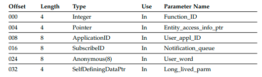
See “Function Parameter Descriptions” on page 452 for more information about the
parameters listed. See “Abstract Data Type Reference” on page 219 for more
information about the abstract data types listed.
Examples
Table 41. Example Names for the EKG_AddObjDelSubs Function
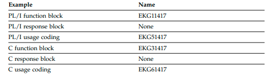
Summary
Table 42. Summary of the EKG_AddObjDelSubs Function
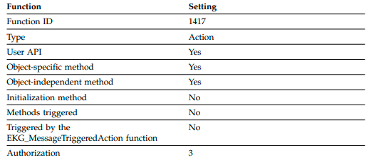
Usage
A deletion-notification subscription, consisting of a User_appl_ID,
Notification_queue, and Long_lived_parm, is added to an object one time. If a
second request specifying the same information is sent, the request is rejected.
The object access information from the function block specifies where the
subscription is to be installed. If the designated object is deleted by the
EKG_DeleteObject function, a notification block is sent to the user application. The
content of the notification block is the output from the EKG_QueryNotifyQueue
function. For more information, see “EKG_QueryNotifyQueue - Query Notification
Queue” on page 427.
EKG_ChangeField - Change a Field
Purpose
This function changes the value of a field of either an object or a class. This
function triggers any change or notification methods that are defined on the field.
Function Block Format
Table 43. Function Block for the EKG_ChangeField Function
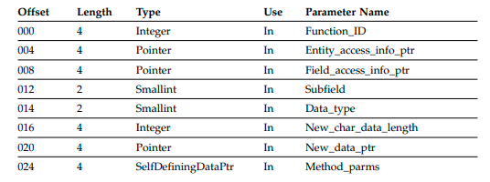
Note that the Subfield parameter at offset 012 is not currently used.
See “Function Parameter Descriptions” on page 452 for more information about the
parameters listed. See “Abstract Data Type Reference” on page 219 for more
information about the abstract data types listed.
Examples
Table 44. Example Names for the EKG_ChangeField Function
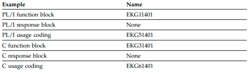
Table 45. Summary of the EKG_ChangeField Function
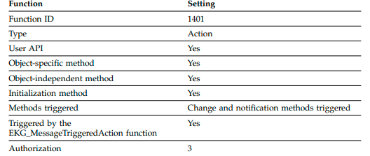
Usage
The new value pointed to by New_data_ptr must be of the same data type as the
target field being changed. The new value must be formatted correctly for that
data type. The Data_type field must specify the same data type as the target field.
You cannot use this function to change fields that have a data type of ObjectID,
ObjectIDList, ObjectLink, ObjectLinkList, ClassID, ClassIDList, or ClassLinkList.
These fields are set either by RODM, or by the LINK and UNLINK transactions.
You cannot use this function to change the RODM system-defined fields that have
read-only access, such as MyName and MyID.
Multiple field values can be changed using the EKG_ChangeMultipleFields
function.
EKG_ChangeMultipleFields - Change Multiple Fields
Purpose
This function enables you to change the value of multiple fields of an object. This
function triggers change and notification methods that are defined on the field.
Function Block Format
Table 46. Function Block for the EKG_ChangeMultipleFields Function
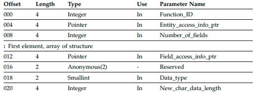
Table 46. Function Block for the EKG_ChangeMultipleFields Function (continued)
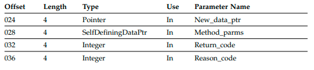
See “Function Parameter Descriptions” on page 452 for more information about the
parameters listed. See “Abstract Data Type Reference” on page 219 for more
information about the abstract data types listed.
Examples
Table 47. Example Names for the EKG_ChangeMultipleFields Function
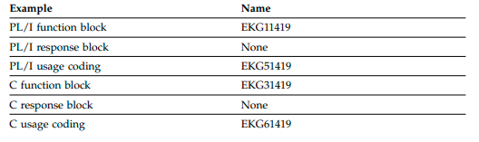
Summary
Table 48. Summary of the EKG_ChangeMultipleFields Function
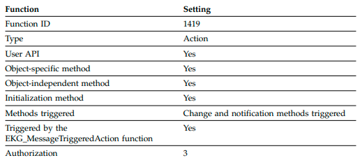
Usage
The new value pointed to by New_data_ptr must be of the same data type as the
target field being changed. The new value must be formatted correctly for that
data type. The Data_type field must specify the same data type as the target field.
You cannot use this function to change fields that have a data type of ObjectID,
ObjectIDList, ObjectLink, ObjectLinkList, ClassID, ClassIDList, or ClassLinkList.
These fields are set either by RODM or by the LINK and UNLINK transactions.
You cannot use this function to change the RODM system-defined fields that have
read-only access, such as MyName and MyID.
EKG_ChangeSubfield - Change a Subfield
Purpose
This function enables you to change the value of a subfield without triggering
change and notification methods.
Function Block Format
Table 49. Function Block for the EKG_ChangeSubfield Function
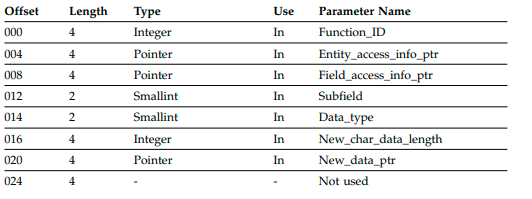
See “Function Parameter Descriptions” on page 452 for more information about the
parameters listed. See “Abstract Data Type Reference” on page 219 for more
information about the abstract data types listed.
Examples
Table 50. Example Names for the EKG_ChangeSubfield Function
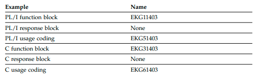
Summary
Table 51. Summary of the EKG_ChangeSubfield Function
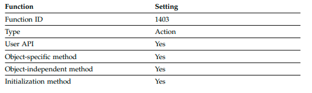
Table 51. Summary of the EKG_ChangeSubfield Function (continued)
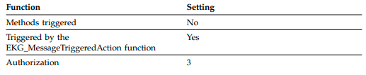
Usage
If the value subfield is to be changed, the data type of the new data must be
identical with that of the field. For other subfields, the data type of the subfield is
determined by the subfield type, and RODM checks that the data_type field in the
function block is compatible with the specified subfield.
The change of a value subfield does not cause the prev_val and timestamp
subfields to be updated, nor does it run a change or notification method.
EKG_Checkpoint - Checkpoint RODM to DASD
Purpose
This function causes RODM to write a copy of its in-storage data to a checkpoint
data set. Use this checkpoint data set to recover RODM data after a system failure.
Function Block Format
Table 52. Function Block for the EKG_Checkpoint Function
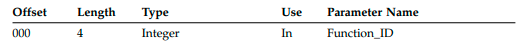
See “Function Parameter Descriptions” on page 452 for more information about the
parameters listed. See “Abstract Data Type Reference” on page 219 for more
information about the abstract data types listed.
Examples
Table 53. Example Names for the EKG_Checkpoint Function
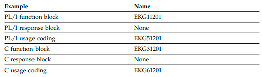
Summary
Table 54. Summary of the EKG_Checkpoint Function
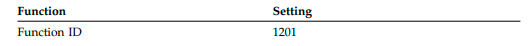
Table 54. Summary of the EKG_Checkpoint Function (continued)
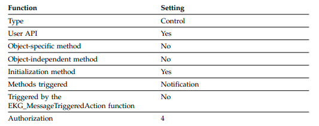
Usage
The EKG_Checkpoint function writes RODM data to predefined and preallocated
VSAM linear data sets, which are called RODM checkpoint data sets.
The checkpoint function is controlled using the CHECKPOINT_FUNCTION
statement in member EKGCUST. Use this statement to either disable the
checkpoint function or control how the checkpoint function reacts when a
checkpoint failure occurs. See the IBM Tivoli NetView for z/OS Administration
Reference for more information.
The data that the EKG_Checkpoint function writes to the checkpoint data sets
includes the following:
The RODM master window: a RODM data area that resides in the RODM
address space and contains RODM system information. The RODM master
window data is written to the master window checkpoint file.
RODM translation window: a RODM data area that resides in the RODM
address space and contains the address information that enables correct data
mapping and addressing in the RODM data cache. RODM translation window
data is written to the translation window checkpoint file.
RODM data windows: RODM data areas that reside in data spaces and contain
the actual data in the data cache. RODM data-window data is written to data
window checkpoint files.
The checkpoint process includes the following steps:
1. Begin checkpoint: RODM sends a message to the console, notifying the
operator that RODM is quiescing.
2. Quiescing: during the checkpoint quiesce period, RODM allows method API
requests, but rejects new user API requests. At the end of the quiesce period, if
no user API, method API, or asynchronous transactions are still running,
RODM proceeds to the next step in the checkpoint process, first stage
checkpoint. Otherwise, RODM issues a Write-To-Operator with Reply (WTOR)
message requesting directions from the operator. The operator must then select
one of three options:
Option Meaning
1 Perform the quiesce again. Choose this option if a checkpoint is really
desired, but give RODM another quiesce period to successfully quiesce.
2 Unconditionally, start first stage checkpoint. Choose this option if a
checkpoint is immediately necessary or after having tried option one.
3 Stop the checkpoint request. Choose this option if option one has been
attempted or if critical RODM tasks must not be stopped.
3. First stage checkpoint: after the quiescence time period ends and all
transactions have finished processing or the operator has requested an
unconditional checkpoint, RODM writes the master window and the translation
windows to their respective checkpoint files.
4. Second stage checkpoint: after the first stage checkpoint ends, RODM sends a
message to the console notifying the operator that transactions can now
resume. RODM then begins writing the data windows, one at a time, to the
data window checkpoint files. User applications can make transaction requests
during this checkpoint stage. However, a transaction will fail if the specific data
window that it needs access to is being written to a data window checkpoint
file or has not yet been written to a data window checkpoint file.
5. End of checkpoint: after all data windows have been written to data window
checkpoint files, RODM sends a message to the console notifying the operator
that the checkpoint process has completed, and two EKG_System object fields
are updated, depending on whether or not the checkpoint process was
successful.
The EKG_LastCheckpointID field of the EKG_System object is updated by
RODM to reflect the transaction ID of the of the last checkpoint transaction if
the checkpoint process is successful. Otherwise, the EKG_LastCheckpointID
field remains unchanged.
The EKG_LastCheckpointResult field of the EKG_System object is updated with
the current transaction ID for a checkpoint process issued from a MODIFY
command, or the transaction ID of the user API requesting the checkpoint
process. The EKG_LastCheckpointResult field also reflects the result of the
checkpoint process by use of return and reason codes. Application programs
that are subscribed to this field receive notification that the checkpoint process
has completed.
With the exception of the checkpoint process, all transactions issued across the
RODM user API are synchronous in that the user does not regain execution control
until the transaction has completed. With the checkpoint process, the application
regains control when the checkpoint request has been recorded. The checkpoint
operation is actually processed asynchronously with other processing in the
application. This same asynchronous processing for the checkpoint process also
applies to an operator-requested checkpoint process, through the MODIFY
command.
Coding Checkpoint Control
RODM updates the EKG_LastCheckpointResult field in the EKG_System class each
time RODM completes a checkpoint operation. The EKG_LastCheckpointResult
field contains the transaction ID of the transaction requesting the checkpoint
operation and the return and reason codes indicating the result of the checkpoint
operation. Applications can subscribe to this field to be notified of the completion
of each checkpoint operation.
Subscribe to the EKG_LastCheckpointResult field to be notified of the result of the
checkpoint. The user can then query the field and determine the result of the
checkpoint operation. If the checkpoint operation is not successful, the user can
then determine why the checkpoint process failed.
A user application can keep a record or journal of its transactions with RODM. If
RODM fails between checkpoint operations, the application can then determine
which transactions have been checkpointed by RODM and which transactions have
to be resent. All transactions in that journal numerically the same or lower than the
EKG_LastCheckPointID field are reflected in the checkpoint data sets of the
successfully completed checkpoint operations and can be erased from the journal.
All transactions numerically higher than the EKG_LastCheckPointID field have to
be reset to restore RODM to its status before the failure.
From the beginning of a checkpoint operation until stage 1 is completed, RODM
rejects any additional transaction requests and provides a return code and reason
code identifying that condition if keyword TRANSPARENT_CHECKPOINT=NO is
specified in the customization file.
User applications can subscribe to the EKG_LastCheckpointID field, the
EKG_LastCheckpointResult field, or to both fields, using the
EKG_AddNotifySubscription function. See “EKG_AddNotifySubscription - Add
Notification Subscription” on page 377. You can use the EKGNOTF notification
method that is supplied with the NetView program for this subscription. See
“RODM Notification Methods” on page 489 for a description of EKGNOTF.
EKG_Connect - Connect to RODM Purpose
The connect function enables an application program to use RODM. This is the
first function that the application can issue to RODM.
Function Block Format
Table 55. Function Block for the EKG_Connect Function
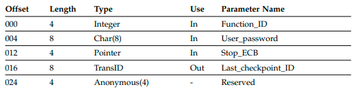
See “Function Parameter Descriptions” on page 452 for more information about the
parameters listed. See “Abstract Data Type Reference” on page 219 for more
information about the abstract data types listed.
Examples
Table 56. Example Names for the EKG_Connect Function
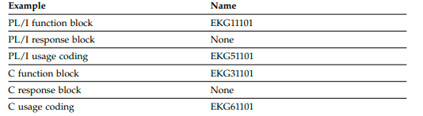
Summary
Table 57. Summary of the EKG_Connect Function
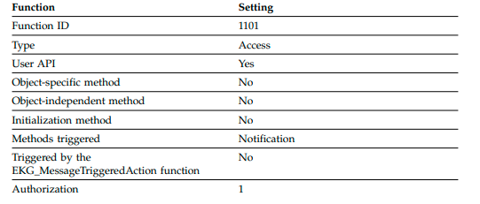
Usage
The User_appl_ID is used to determine the users access authority and to associate
registered event control blocks (ECBs) with the appropriate user.
If the system on which RODM is installed is protected by a system authorization
facility, the user can connect to RODM using a blank user ID. RODM obtains the
user ID from the system authorization facility and uses it to determine the user's
access authority in RODM. If the system is not protected by a system authorization
facility, the user cannot connect to RODM using a blank user ID.
When a user application issues an EKG_Connect function request, RODM creates a
user object from the EKG_User system-defined class.
An access block, as described in “Access Block” on page 309, must be passed. The
user's sign_on_token parameter in the access block is set by RODM. This
parameter must not be changed by the user application for subsequent calls to
RODM.
A user can disconnect from RODM without purging the subscription notification
queue. Before the notification queues that are owned by this user application ID
can again be posted, all ECB addresses associated with all notification queues for
this user and with subscription notifications must be reset for the new address
space.
All tasks in the address space from which the EKG_Connect function was issued
can access RODM either by connecting to RODM with unique, RODM authorized
user IDs, or by using the sign_on_token. The sign_on_token is not valid when the
connecting TCB ends or the EKG_Disconnect function is performed.
EKG_ConnectLong - Connect to RODM
Purpose
The connectlong function enables an application program to use RODM. This is the
first function the application can issue to RODM.
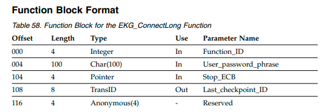
See “Function Parameter Descriptions” on page 452 for more information about the
parameters listed. See “Abstract Data Type Reference” on page 219 for more
information about the abstract data types listed.
Examples
Table 59. Example Names for the EKG_ConnectLong Function
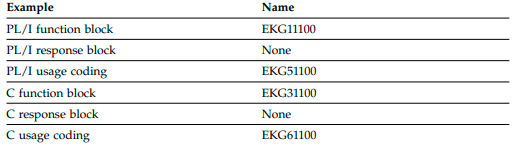
Summary
Table 60. Summary of the EKG_ConnectLong Function
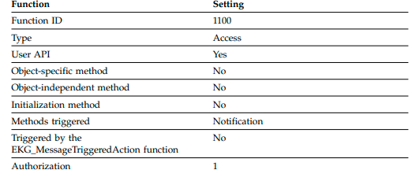
Usage
The User_appl_ID is used to determine the users access authority and to associate
registered ECBs with the appropriate user.
If the system on which RODM is installed is protected by a system authorization
facility, the user can connect to RODM using a blank user ID. RODM obtains the
user ID from the system authorization facility and uses it to determine the user's
access authority in RODM. If the system is not protected by a system authorization
facility, the user cannot connect to RODM using a blank user ID.
When a user application issues an EKG_ConnectLong function request, RODM
creates a user object from the EKG_User system-defined class.
An access block, as described in “Access Block” on page 309, must be passed. The
user's sign_on_token parameter in the access block is set by RODM. This
parameter must not be changed by the user application for subsequent calls to
RODM.
A user can disconnect from RODM without purging the subscription notification
queue. Before notification queues owned by this user application ID can again be
posted, all ECB addresses associated with all notification queues for this user and
with subscription notifications must be reset for the new address space.
All tasks in the address space from which the EKG_ConnectLong function was
issued can access RODM either by connecting to RODM with unique, RODM
authorized user IDs, or by using the sign_on_token. The sign_on_token is not valid
when the connecting TCB ends or the EKG_Disconnect function is performed.
EKG_CreateClass - Create a Class
Purpose
This function creates a new class as the child of a specified parent class in the
RODM data cache. RODM adds the new class ID entry to the MyClassChildren
linked-list field of the parent of the new class.
Function Block Format
Table 61. Function Block for the EKG_CreateClass Function
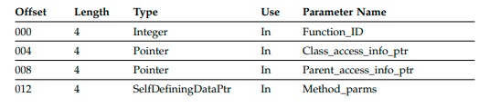
See “Function Parameter Descriptions” on page 452 for more information about the
parameters listed. See “Abstract Data Type Reference” on page 219 for more
information about the abstract data types listed.
Examples
Table 62. Example Names for the EKG_CreateClass Function
Table 62. Example Names for the EKG_CreateClass Function (continued)
| Example | Name |
| C usage coding | EKG61302 |
Summary
Table 63. Summary of the EKG_CreateClass Function
Usage
Specify the class name and RODM returns the associated ID.
Classes are created only with system-defined fields and those fields that are
inherited through the primary hierarchy. All additional fields must be added
explicitly by calls to RODM.
Creating a class changes the value of the WhatIAm field of the parent of the class
if the parent did not have any class children.
EKG_CreateField - Create a Field
Purpose
This function creates a new field on a class in the RODM data cache.
Function Block Format
Table 64. Function Block for the EKG_CreateField Function
See “Function Parameter Descriptions” on page 452 for more information about the
parameters listed. See “Abstract Data Type Reference” on page 219 for more
information about the abstract data types listed.
Examples
Table 65. Example Names for the EKG_CreateField Function
Summary
Table 66. Summary of the EKG_CreateField Function
Usage
The initial value for a field is the null value of the field's data type.
When a field is created, RODM applies the following rules:
If the field being added to a class is public and has the same name and fields
(that is, data type and subfield definitions) as a public field already defined in a
subclass, the field is defined in the specified class and the subclass defined field
is treated as a local value for that field (this affects what value is inherited below
the subclass). If the data type of the field in the subclass is different from the
new data type, the new definition is rejected.
If the new field being added is a private field, no check is made for subclass
definitions.
If a new field definition is for a public field and there is an existing private
definition in a subclass of the specified class, the new field definition is rejected.
If the field already exists and has exactly the same data type and subfield
definitions as was requested, a warning return code is generated and a reason code
describing that condition is returned. The original field is left as previously
defined.
If a subfield that is not valid is specified, RODM does not create that subfield.
However, RODM does create the field and all valid requested subfields. RODM
issues the warning return code 4 with reason code 100.
EKG_CreateObject - Create an Object
Purpose
This function creates a new object in the RODM data cache. RODM adds the new
object ID entry to the MyObjectChildren linked-list field of the parent of the new
object.
Function Block Format
Table 67. Function Block for the EKG_CreateObject Function
See “Function Parameter Descriptions” on page 452 for more information about the
parameters listed. See “Abstract Data Type Reference” on page 219 for more
information about the abstract data types listed.
Examples
Table 68. Example Names for the EKG_CreateObject Function
Summary
Table 69. Summary of the EKG_CreateObject Function
Usage
The Entity_access_info_ptr must point to an entity access block that specifies the
class which is the parent of the object being created. The Object_name_ptr of the
entity access block is optional. If the Object_name_ptr is specified, it must point to
a field of type ObjectName that contains the name of the requested new object.
Otherwise, RODM assigns the new object a name.
If you are creating an object of the EKG_Method class or the
EKG_NotificationQueue class, the object name is required. Object names for these
classes are limited to 8 characters.
The object name is not returned to the caller through this interface, but can be
accessed by querying the MyName field of the object. RODM assigns names in the
form EKGddddddd where ddddddd is a decimal number from 0000000 to 9999999. If
you specify the object name, do not specify an object name that begins with EKG.
The Object_ID field in the entity access block is set by RODM when the object is
successfully created. The Method_Parms short_lived_parameters are passed to the
notification method on the MyObjectChildren field of the class and the notification
method, if one exists, is triggered.
When a new object is created, it contains all of the public locally- defined and
inherited fields that appear on the class of the new object. The values in these
fields are initially the default values inherited from the class except for the
system-defined fields, which are set by RODM, and fields of type ObjectLink,
which are empty fields.
All subfields, wherever they exist, begin existence on a new object with inherited
values except for the notify subfield. A Notify subfield starts out with the null
value.
If the parent class does not have any object children when this object is created,
RODM updates the WhatIAm field of the class to indicate that the class now has
object children.
EKG_CreateSubfield - Create a Subfield
Purpose
This function creates one or more subfields for an existing field in an existing class
in the RODM data cache.
See “Function Parameter Descriptions” on page 452 for more information about the
parameters listed. See “Abstract Data Type Reference” on page 219 for more
information about the abstract data types listed.
Examples
Table 71. Example Names for the EKG_CreateSubfield Function
Summary
Table 72. Summary of the EKG_CreateSubfield Function
Usage
Subfields can be created only on an existing field of a class. Subfields must be
created in the class in which the field was created.
If a specified subfield already exists and other specified subfields do not exist, the
subfields that do not exist are created and a warning return code is generated
EKG_DeleteClass - Delete a Class
Purpose
This function deletes an existing class from the RODM data cache. RODM removes
the value in the MyID field of the deleted class from the MyClassChildren
linked-list field of the parent of the deleted class.
Function Block Format
Table 73. Function Block for the EKG_DeleteClass Function
See “Function Parameter Descriptions” on page 452 for more information about the
parameters listed. See “Abstract Data Type Reference” on page 219 for more
information about the abstract data types listed.
Examples
Table 74. Example Names for the EKG_DeleteClass Function
Summary
Table 75. Summary of the EKG_DeleteClass Function
Usage
You cannot delete a RODM system-defined class or a class that has children.
Deleting a class will change the value of the WhatIAm field of the parent of the
class if the parent class no longer has any class children.
EKG_DeleteField - Delete a Field
Purpose
This function deletes a field from a class in the RODM data cache. The field is also
deleted from any classes and objects that inherit the field from this class.
Function Block Format
Table 76. Function Block for the EKG_DeleteField Function
See “Function Parameter Descriptions” on page 452 for more information about the
parameters listed. See “Abstract Data Type Reference” on page 219 for more
information about the abstract data types listed.
Examples
Table 77. Example Names for the EKG_DeleteField Function
Summary
Table 78. Summary of the EKG_DeleteField Function
Usage
Fields can be deleted only from classes; they cannot be deleted from objects.
Deletion of a public field on a class removes the existence of that field from all
descendant classes.
Before a public field can be deleted from a class, you must delete all objects
created from that class and from descendent classes of that class.
Local values assigned to a field are discarded when that field is deleted.
Private fields can be deleted at any time.
EKG_DeleteNotifySubscription - Delete Notification
Subscription
Purpose
This function deletes one or more notification subscriptions from a field.
Function Block Format
Table 79. Function Block for the EKG_DeleteNotifySubscription Function
See “Function Parameter Descriptions” on page 452 for more information about the
parameters listed. See “Abstract Data Type Reference” on page 219 for more
information about the abstract data types listed.
Examples
Table 80. Example Names for the EKG_DeleteNotifySubscription Function
Summary
Table 81. Summary of the EKG_DeleteNotifySubscription Function
Usage
Deleting a notification subscription does not delete the notification blocks that are
queued on the notification queue when the delete function is issued. The
notification queue object is not deleted.
The notification subscription that is to be deleted is uniquely identified by four
fields: the User_appl_ID field, the Notification_queue field, the Notify_method
field, and the Long_lived_parm field. Using these four fields, the
EKG_DeleteNotifySubscription function deletes one or more notification
subscriptions based on the first of the following rules that applies:
1. If the Notification_queue field is set to an asterisk followed by seven blanks
("* "), and the Notify_method and Long_lived_parm fields are set to
null values, all subscriptions associated with the specified User_appl_ID field
are deleted.
2. If the Notification_queue field is set to an asterisk followed by seven blanks
("* "), all subscriptions associated with the specified User_appl_ID,
Notify_method, and Long_lived_parm fields are deleted.
3. If the Notify_method field is set to the null value, RODM deletes the
notification subscriptions that meet the other criteria without considering the
value in the Notify_method field.
4. If the Long_lived_parm field is set to the null value, RODM deletes the
notification subscriptions that meet the other criteria without considering the
value in the Long_lived_parm field.
Specifying User_appl_ID as a null value does not have the same effect as
specifying null values for the other parameters. A Null User_appl_ID value is
interpreted the same here as for the EKG_AddNotifySubscription function; it
requires RODM to supply a default value. The default is determined exactly as for
the EKG_AddNotifySubscription function (see “EKG_AddNotifySubscription - Add
Notification Subscription” on page 377).
To specify a null Long_lived_parm, declare a pointer to the Long_lived_parm data
type with a value of zero.
EKG_DeleteObject - Delete an Object
Purpose
This function deletes an existing object from a specified class. RODM deletes the
object ID of the deleted object from the MyObjectChildren field of the parent class
of the deleted object.
Function Block Format
Table 82. Function Block for the EKG_DeleteObject Function
See “Function Parameter Descriptions” on page 452 for more information about the
parameters listed. See “Abstract Data Type Reference” on page 219 for more
information about the abstract data types listed.
Examples
Table 83. Example Names for the EKG_DeleteObject Function
Summary
Table 84. Summary of the EKG_DeleteObject Function